2 - PyTorch Introduction#
2.1 Tensors#
!pip install torch torchvision torchmetrics matplotlib scikit-learn pandas mlxtend
Requirement already satisfied: torch in /home/sachi/venv/astro/lib/python3.12/site-packages (2.5.1)
Requirement already satisfied: torchvision in /home/sachi/venv/astro/lib/python3.12/site-packages (0.20.1)
Requirement already satisfied: torchmetrics in /home/sachi/venv/astro/lib/python3.12/site-packages (1.6.1)
Requirement already satisfied: matplotlib in /home/sachi/venv/astro/lib/python3.12/site-packages (3.9.2)
Requirement already satisfied: scikit-learn in /home/sachi/venv/astro/lib/python3.12/site-packages (1.5.1)
Requirement already satisfied: pandas in /home/sachi/venv/astro/lib/python3.12/site-packages (2.2.2)
Collecting mlxtend
Downloading mlxtend-0.23.3-py3-none-any.whl.metadata (7.3 kB)
Requirement already satisfied: filelock in /home/sachi/venv/astro/lib/python3.12/site-packages (from torch) (3.16.1)
Requirement already satisfied: typing-extensions>=4.8.0 in /home/sachi/venv/astro/lib/python3.12/site-packages (from torch) (4.12.2)
Requirement already satisfied: networkx in /home/sachi/venv/astro/lib/python3.12/site-packages (from torch) (3.4.2)
Requirement already satisfied: jinja2 in /home/sachi/venv/astro/lib/python3.12/site-packages (from torch) (3.1.4)
Requirement already satisfied: fsspec in /home/sachi/venv/astro/lib/python3.12/site-packages (from torch) (2024.12.0)
Requirement already satisfied: nvidia-cuda-nvrtc-cu12==12.4.127 in /home/sachi/venv/astro/lib/python3.12/site-packages (from torch) (12.4.127)
Requirement already satisfied: nvidia-cuda-runtime-cu12==12.4.127 in /home/sachi/venv/astro/lib/python3.12/site-packages (from torch) (12.4.127)
Requirement already satisfied: nvidia-cuda-cupti-cu12==12.4.127 in /home/sachi/venv/astro/lib/python3.12/site-packages (from torch) (12.4.127)
Requirement already satisfied: nvidia-cudnn-cu12==9.1.0.70 in /home/sachi/venv/astro/lib/python3.12/site-packages (from torch) (9.1.0.70)
Requirement already satisfied: nvidia-cublas-cu12==12.4.5.8 in /home/sachi/venv/astro/lib/python3.12/site-packages (from torch) (12.4.5.8)
Requirement already satisfied: nvidia-cufft-cu12==11.2.1.3 in /home/sachi/venv/astro/lib/python3.12/site-packages (from torch) (11.2.1.3)
Requirement already satisfied: nvidia-curand-cu12==10.3.5.147 in /home/sachi/venv/astro/lib/python3.12/site-packages (from torch) (10.3.5.147)
Requirement already satisfied: nvidia-cusolver-cu12==11.6.1.9 in /home/sachi/venv/astro/lib/python3.12/site-packages (from torch) (11.6.1.9)
Requirement already satisfied: nvidia-cusparse-cu12==12.3.1.170 in /home/sachi/venv/astro/lib/python3.12/site-packages (from torch) (12.3.1.170)
Requirement already satisfied: nvidia-nccl-cu12==2.21.5 in /home/sachi/venv/astro/lib/python3.12/site-packages (from torch) (2.21.5)
Requirement already satisfied: nvidia-nvtx-cu12==12.4.127 in /home/sachi/venv/astro/lib/python3.12/site-packages (from torch) (12.4.127)
Requirement already satisfied: nvidia-nvjitlink-cu12==12.4.127 in /home/sachi/venv/astro/lib/python3.12/site-packages (from torch) (12.4.127)
Requirement already satisfied: triton==3.1.0 in /home/sachi/venv/astro/lib/python3.12/site-packages (from torch) (3.1.0)
Requirement already satisfied: setuptools in /home/sachi/venv/astro/lib/python3.12/site-packages (from torch) (75.8.0)
Requirement already satisfied: sympy==1.13.1 in /home/sachi/venv/astro/lib/python3.12/site-packages (from torch) (1.13.1)
Requirement already satisfied: mpmath<1.4,>=1.1.0 in /home/sachi/venv/astro/lib/python3.12/site-packages (from sympy==1.13.1->torch) (1.3.0)
Requirement already satisfied: numpy in /home/sachi/venv/astro/lib/python3.12/site-packages (from torchvision) (2.1.0)
Requirement already satisfied: pillow!=8.3.*,>=5.3.0 in /home/sachi/venv/astro/lib/python3.12/site-packages (from torchvision) (10.4.0)
Requirement already satisfied: packaging>17.1 in /home/sachi/venv/astro/lib/python3.12/site-packages (from torchmetrics) (24.1)
Requirement already satisfied: lightning-utilities>=0.8.0 in /home/sachi/venv/astro/lib/python3.12/site-packages (from torchmetrics) (0.11.9)
Requirement already satisfied: contourpy>=1.0.1 in /home/sachi/venv/astro/lib/python3.12/site-packages (from matplotlib) (1.2.1)
Requirement already satisfied: cycler>=0.10 in /home/sachi/venv/astro/lib/python3.12/site-packages (from matplotlib) (0.12.1)
Requirement already satisfied: fonttools>=4.22.0 in /home/sachi/venv/astro/lib/python3.12/site-packages (from matplotlib) (4.53.1)
Requirement already satisfied: kiwisolver>=1.3.1 in /home/sachi/venv/astro/lib/python3.12/site-packages (from matplotlib) (1.4.5)
Requirement already satisfied: pyparsing>=2.3.1 in /home/sachi/venv/astro/lib/python3.12/site-packages (from matplotlib) (3.1.4)
Requirement already satisfied: python-dateutil>=2.7 in /home/sachi/venv/astro/lib/python3.12/site-packages (from matplotlib) (2.9.0.post0)
Requirement already satisfied: scipy>=1.6.0 in /home/sachi/venv/astro/lib/python3.12/site-packages (from scikit-learn) (1.14.1)
Requirement already satisfied: joblib>=1.2.0 in /home/sachi/venv/astro/lib/python3.12/site-packages (from scikit-learn) (1.4.2)
Requirement already satisfied: threadpoolctl>=3.1.0 in /home/sachi/venv/astro/lib/python3.12/site-packages (from scikit-learn) (3.5.0)
Requirement already satisfied: pytz>=2020.1 in /home/sachi/venv/astro/lib/python3.12/site-packages (from pandas) (2024.1)
Requirement already satisfied: tzdata>=2022.7 in /home/sachi/venv/astro/lib/python3.12/site-packages (from pandas) (2024.1)
Requirement already satisfied: six>=1.5 in /home/sachi/venv/astro/lib/python3.12/site-packages (from python-dateutil>=2.7->matplotlib) (1.16.0)
Requirement already satisfied: MarkupSafe>=2.0 in /home/sachi/venv/astro/lib/python3.12/site-packages (from jinja2->torch) (2.1.5)
Downloading mlxtend-0.23.3-py3-none-any.whl (1.4 MB)
━━━━━━━━━━━━━━━━━━━━━━━━━━━━━━━━━━━━━━━━ 1.4/1.4 MB 13.8 MB/s eta 0:00:00
?25hInstalling collected packages: mlxtend
Successfully installed mlxtend-0.23.3
[notice] A new release of pip is available: 24.2 -> 24.3.1
[notice] To update, run: pip install --upgrade pip
import torch
torch.__version__
'2.5.1+cu124'
scalar = torch.tensor(81)
scalar
tensor(81)
scalar.ndim
0
scalar.item()
81
vector = torch.tensor([9, 9])
vector
tensor([9, 9])
vector.ndim
1
vector.shape
torch.Size([2])
MATRIX = torch.tensor([[3, 3],
[3, 3]])
MATRIX
tensor([[3, 3],
[3, 3]])
MATRIX.ndim
2
MATRIX.shape
torch.Size([2, 2])
TENSOR = torch.tensor([[[1, 2, 3],
[3, 6, 9],
[2, 4, 5]]])
TENSOR
tensor([[[1, 2, 3],
[3, 6, 9],
[2, 4, 5]]])
float_32_tensor = torch.tensor([3.0, 6.0, 9.0],
dtype=torch.float32)
float_32_tensor.dtype
torch.float32
some_tensor = torch.rand(3, 4)
# Find out details about it
print(some_tensor)
print(f"Shape of tensor: {some_tensor.shape}")
print(f"Datatype of tensor: {some_tensor.dtype}")
print(f"Device tensor is stored on: {some_tensor.device}")
tensor([[0.7130, 0.4885, 0.4945, 0.6266],
[0.9020, 0.5209, 0.8826, 0.1282],
[0.3751, 0.2064, 0.4747, 0.7231]])
Shape of tensor: torch.Size([3, 4])
Datatype of tensor: torch.float32
Device tensor is stored on: cpu
Name |
What is it? |
Number of dimensions |
Lower or upper (usually/example) |
|---|---|---|---|
scalar |
a single number |
0 |
Lower ( |
vector |
a number with direction (e.g. wind speed with direction) but can also have many other numbers |
1 |
Lower ( |
matrix |
a 2-dimensional array of numbers |
2 |
Upper ( |
tensor |
an n-dimensional array of numbers |
can be any number, a 0-dimension tensor is a scalar, a 1-dimension tensor is a vector |
Upper ( |
2.2 Random Tensors#
# Create a random tensor of size (3, 4)
random_tensor = torch.rand(size=(3, 4))
random_tensor, random_tensor.dtype
(tensor([[0.3229, 0.2504, 0.0116, 0.6638],
[0.4560, 0.5886, 0.0087, 0.1804],
[0.5586, 0.5271, 0.3666, 0.2781]]),
torch.float32)
random_image_tensor = torch.rand(size=(28, 28, 3))
random_image_tensor.shape, random_image_tensor.ndim
(torch.Size([28, 28, 3]), 3)
# Create a tensor of all zeros
zeros = torch.zeros(size=(3, 4))
zeros, zeros.dtype
(tensor([[0., 0., 0., 0.],
[0., 0., 0., 0.],
[0., 0., 0., 0.]]),
torch.float32)
# Create a tensor of all ones
ones = torch.ones(size=(3, 4))
ones, ones.dtype
(tensor([[1., 1., 1., 1.],
[1., 1., 1., 1.],
[1., 1., 1., 1.]]),
torch.float32)
# Create a range of values 0 to 10
zero_to_ten = torch.arange(start=0, end=10, step=1)
zero_to_ten
tensor([0, 1, 2, 3, 4, 5, 6, 7, 8, 9])
# Squeeze each value into tensors of rank dim
zero_to_ten = torch.arange(start=0, end=10, step=1)
squished_tensor = zero_to_ten.unsqueeze(dim=1)
squished_tensor
tensor([[0],
[1],
[2],
[3],
[4],
[5],
[6],
[7],
[8],
[9]])
2.3 Tensor Operations#
tensor = torch.tensor([1, 2, 3])
tensor + 10
tensor([11, 12, 13])
tensor * 10
tensor([10, 20, 30])
Note how it’s not [110, 120, 130]
tensor
tensor([1, 2, 3])
tensor = tensor - 10
tensor
tensor([-9, -8, -7])
torch.multiply(tensor, 10)
tensor([-90, -80, -70])
Matrix multiplication#
One of the most common operations in machine learning and deep learning algorithms (like neural networks) is matrix multiplication
PyTorch implements matrix multiplication functionality in the torch.matmul() method.
The main two rules for matrix multiplication to remember are:
The inner dimensions must match:
(3, 2) @ (3, 2)won’t work(2, 3) @ (3, 2)will work(3, 2) @ (2, 3)will work
The resulting matrix has the shape of the outer dimensions:
(2, 3) @ (3, 2)->(2, 2)(3, 2) @ (2, 3)->(3, 3)
Note: “
@” in Python is the symbol for matrix multiplication.
tensor = torch.tensor([1, 2, 3]) # rank 1
tensor * tensor # Element wise multiplication
tensor([1, 4, 9])
torch.matmul(tensor, tensor) # Matrix multiplication
tensor(14)
tensor @ tensor
tensor(14)
%%time
# Matrix multiplication by hand
value = 0
for i in range(len(tensor)):
value += tensor[i] * tensor[i]
value
CPU times: user 1.04 ms, sys: 1.01 ms, total: 2.04 ms
Wall time: 1.46 ms
tensor(14)
%%time
torch.matmul(tensor, tensor)
CPU times: user 51 μs, sys: 6 μs, total: 57 μs
Wall time: 62.9 μs
tensor(14)
The most common error in deep learning:
tensor_A = torch.tensor([[1, 2],
[3, 4],
[5, 6]], dtype=torch.float32)
tensor_B = torch.tensor([[7, 10],
[8, 11],
[9, 12]], dtype=torch.float32)
torch.matmul(tensor_A, tensor_B)
---------------------------------------------------------------------------
RuntimeError Traceback (most recent call last)
Cell In[32], line 9
1 tensor_A = torch.tensor([[1, 2],
2 [3, 4],
3 [5, 6]], dtype=torch.float32)
5 tensor_B = torch.tensor([[7, 10],
6 [8, 11],
7 [9, 12]], dtype=torch.float32)
----> 9 torch.matmul(tensor_A, tensor_B)
RuntimeError: mat1 and mat2 shapes cannot be multiplied (3x2 and 3x2)
We can fix this by performing a tranpose on the matrix (switch the dimensions)
print(tensor_A)
tensor([[1., 2.],
[3., 4.],
[5., 6.]])
print(tensor_A.T)
tensor([[1., 3., 5.],
[2., 4., 6.]])
tensor_A.T @ tensor_B
tensor([[ 76., 103.],
[100., 136.]])
tensor_A @ tensor_B.T
tensor([[ 27., 30., 33.],
[ 61., 68., 75.],
[ 95., 106., 117.]])
Matrix multiplication is NOT commutative
http://matrixmultiplication.xyz/
Neural networks are full of matrix multiplications and dot products.
The torch.nn.Linear() module (we’ll see this in action later on), also known as a feed-forward layer or fully connected layer, implements a matrix multiplication between an input x and a weights matrix A.
Where:
xis the input to the layer (deep learning is a stack of layers liketorch.nn.Linear()and others on top of each other).Ais the weights matrix created by the layer, this starts out as random numbers that get adjusted as a neural network learns to better represent patterns in the data (notice the “T”, that’s because the weights matrix gets transposed).Note: You might also often see
Wor another letter likeXused to showcase the weights matrix.
bis the bias term used to slightly offset the weights and inputs.yis the output (a manipulation of the input in the hopes to discover patterns in it).
This is a linear function (just like \(Y = \beta_0 + \beta_1 X\)), and can be used to draw a straight line!
Let’s play around with a linear layer.
Try changing the values of in_features and out_features below and see what happens.
Do you notice anything to do with the shapes?
# Since the linear layer starts with a random weights matrix, let's make it reproducible (more on this later)
torch.manual_seed(42)
# This uses matrix multiplication
linear = torch.nn.Linear(in_features=2, # in_features = matches inner dimension of input
out_features=8) # out_features = describes outer value
x = torch.tensor([[1, 2],
[3, 4],
[5, 6]], dtype=torch.float32)
output = linear(x)
print(f"Input shape: {x.shape}\n")
print(f"Output:\n{output}\n\nOutput shape: {output.shape}")
Input shape: torch.Size([3, 2])
Output:
tensor([[ 2.2595, 1.2380, -0.1997, 0.6665, -0.7400, 0.7964, 0.4267, 0.6104],
[ 4.5145, 2.2058, -0.2241, 0.8086, -0.5308, 2.2903, 1.6631, 1.0926],
[ 6.7696, 3.1736, -0.2486, 0.9506, -0.3216, 3.7842, 2.8995, 1.5748]],
grad_fn=<AddmmBackward0>)
Output shape: torch.Size([3, 8])
Question: What happens if you change
in_featuresfrom 2 to 3 above? Does it error? How could you change the shape of the input (x) to accommodate to the error? Hint: what did we have to do totensor_Babove?
If you’ve never done it before, matrix multiplication can be a confusing topic at first.
2.4 PyTorch on Nvidia GPUs / Apple Silicon#
# Check for Nvidia GPU
torch.cuda.is_available()
True
# Set device type
device = "cuda" if torch.cuda.is_available() else "cpu"
device
'cuda'
# Check for Mx GPU
torch.backends.mps.is_available()
False
device = "mps" if torch.backends.mps.is_available() else "cpu"
device
'cpu'
In general we should write device agnostic code, so this is a catch all
if torch.cuda.is_available():
device = "cuda" # Use NVIDIA GPU (if available)
elif torch.backends.mps.is_available():
device = "mps" # Use Apple Silicon GPU (if available)
else:
device = "cpu" # Default to CPU if no GPU is available
# Create tensor (default on CPU)
tensor = torch.tensor([[1., 2., 3.],
[4., 5., 6.]])
# Tensor not on GPU
print(tensor, tensor.device)
# Move tensor to GPU (if available)
tensor_on_gpu = tensor.to(device)
print(tensor_on_gpu, tensor_on_gpu.device)
tensor([[1., 2., 3.],
[4., 5., 6.]]) cpu
tensor([[1., 2., 3.],
[4., 5., 6.]], device='cuda:0') cuda:0
# and to return it to the CPU
tensor_back_on_cpu = tensor_on_gpu.cpu()
tensor_back_on_cpu
tensor([[1., 2., 3.],
[4., 5., 6.]])
Excersise#
Set the seed to 100, and create 2 (7x7) tensors. Print both of them out.
Perform matrix multiplication on [4,2,8,3,5,8,9,5].
Assign 2 matrices to the GPU then perform matrix multiplication on them (you’ll need Apple Silicon or Nvidia GPU for this)
3 - Linear Regression#
3.1 Initializing our datasets#
import torch
from torch import nn # nn contains all of PyTorch's building blocks for neural networks
import matplotlib.pyplot as plt
torch.__version__
'2.5.1+cu124'
# Create *known* parameters
weight = 0.7
bias = 0.3
# Create data
start = 0
end = 1
step = 0.02
X = torch.arange(start, end, step)
y = weight * X + bias
X[:10], y[:10]
(tensor([0.0000, 0.0200, 0.0400, 0.0600, 0.0800, 0.1000, 0.1200, 0.1400, 0.1600,
0.1800]),
tensor([0.3000, 0.3140, 0.3280, 0.3420, 0.3560, 0.3700, 0.3840, 0.3980, 0.4120,
0.4260]))
Split |
Purpose |
Amount of total data |
How often is it used? |
|---|---|---|---|
Training set |
The model learns from this data (like the course materials you study during the semester). |
~60-80% |
Always |
Validation set |
The model gets tuned on this data (like the practice exam you take before the final exam). |
~10-20% |
Often but not always |
Testing set |
The model gets evaluated on this data to test what it has learned (like the final exam you take at the end of the semester). |
~10-20% |
Always |
For now, we’ll just use a training and test set, this means we’ll have a dataset for our model to learn on as well as be evaluated on.
We can create them by splitting our X and y tensors.
# Create train/test split
train_split = int(0.8 * len(X)) # Identify the split index 80% into the dataset
X_train, y_train = X[:train_split], y[:train_split]
X_test, y_test = X[train_split:], y[train_split:]
len(X_train), len(y_train), len(X_test), len(y_test)
(40, 40, 10, 10)
Wonderful, we’ve got 40 samples for training (X_train & y_train) and 10 samples for testing (X_test & y_test).
The model we create is going to try and learn the relationship between X_train & y_train and then we will evaluate what it learns on X_test and y_test.
But right now our data is just numbers on a page.
Let’s create a function to visualize it.
def plot_predictions(train_data=X_train,
train_labels=y_train,
test_data=X_test,
test_labels=y_test,
predictions=None):
"""
Plots training data, test data and compares predictions.
"""
plt.figure(figsize=(10, 7))
# Plot training data in blue
plt.scatter(train_data, train_labels, c="b", s=4, label="Training data")
# Plot test data in green
plt.scatter(test_data, test_labels, c="g", s=4, label="Testing data")
if predictions is not None:
# Plot the predictions in red (predictions were made on the test data)
plt.scatter(test_data, predictions, c="r", s=4, label="Predictions")
# Show the legend
plt.legend(prop={"size": 14});
plot_predictions()
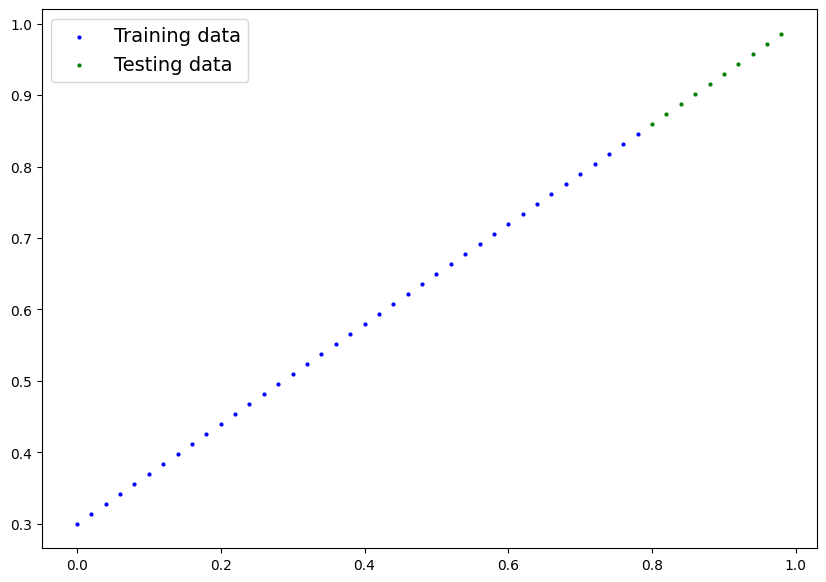
Now let’s build ourselves a Linear Regression Model!
3.2 Building the model#
# Create a Linear Regression model class
class LinearRegressionModel(nn.Module):
def __init__(self):
super().__init__()
self.weights = nn.Parameter(torch.randn(1, # <- start with random weights (this will get adjusted as the model learns)
dtype=torch.float), # <- PyTorch loves float32 by default
requires_grad=True) # <- can we update this value with gradient descent?
self.bias = nn.Parameter(torch.randn(1, # <- start with random bias (this will get adjusted as the model learns)
dtype=torch.float), # <- PyTorch loves float32 by default
requires_grad=True) # <- can we update this value with gradient descent?
def forward(self, x: torch.Tensor) -> torch.Tensor: # <- "x" is the input data (e.g. training/testing features)
return self.bias + self.weights * x # <- this is the linear regression formula (y = \beta_0 + \beta_1*x)
torch.manual_seed(42)
model_0 = LinearRegressionModel()
list(model_0.parameters())
[Parameter containing:
tensor([0.3367], requires_grad=True),
Parameter containing:
tensor([0.1288], requires_grad=True)]
model_0.state_dict()
OrderedDict([('weights', tensor([0.3367])), ('bias', tensor([0.1288]))])
By default our model will be using the CPU
next(model_0.parameters()).device
device(type='cpu')
Using this model, we can now make predictions!!!
with torch.inference_mode():
y_preds = model_0(X_test)
model_0.to(device)
next(model_0.parameters()).device
device(type='cuda', index=0)
print(f"Number of testing samples: {len(X_test)}")
print(f"Number of predictions made: {len(y_preds)}")
print(f"Predicted values:\n{y_preds}")
Number of testing samples: 10
Number of predictions made: 10
Predicted values:
tensor([0.3982, 0.4049, 0.4116, 0.4184, 0.4251, 0.4318, 0.4386, 0.4453, 0.4520,
0.4588])
plot_predictions(predictions=y_preds)
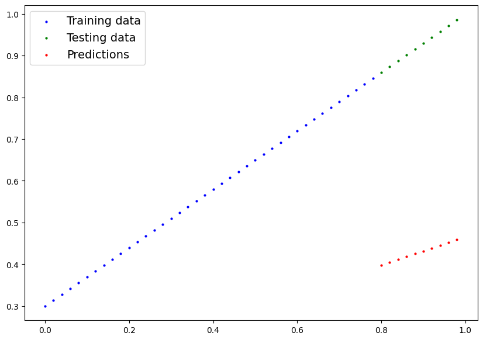
uhh… that’s not good
Wait, that makes perfect sense!
We haven’t even trained our model, let’s change that
3.3 Training the model#
Right now our model is making predictions using random parameters to make calculations, it’s basically guessing (randomly).
To fix that, we can update its internal parameters, the weights and bias values we set randomly using nn.Parameter() and torch.randn() to be something that better represents the data.
We could hard code this (since we know the default values weight=0.7 and bias=0.3) but where’s the fun in that?
Most of the time you won’t know what the ideal parameters are for a model.
Instead, it’s much more fun to write code to see if the model can try and figure them out itself.
Creating a loss function and optimizer in PyTorch#
For our model to update its parameters on its own, we’ll need to add a few more things to our recipe.
And that’s a loss function as well as an optimizer.
The rolls of these are:
Function |
What does it do? |
Where does it live in PyTorch? |
Common values |
|---|---|---|---|
Loss function |
Measures how wrong your model’s predictions (e.g. |
PyTorch has plenty of built-in loss functions in |
Mean absolute error (MAE) for regression problems with outliers ( |
Optimizer |
Tells your model how to update its internal parameters to best lower the loss. |
You can find various optimization function implementations in |
Stochastic gradient descent ( |
Let’s create a loss function and an optimizer we can use to help improve our model.
Depending on what kind of problem you’re working on will depend on what loss function and what optimizer you use.
However, there are some common values, that are known to work well such as the SGD (stochastic gradient descent) or Adam optimizer. And the MAE/MSE loss function for regression problems (predicting a number) or binary cross entropy loss function for classification problems (predicting one thing or another).
For our problem, since we’re predicting a number, let’s use MSE (which is under torch.nn.MSELoss()) in PyTorch as our loss function.
And we’ll use SGD, torch.optim.SGD(params, lr) where:
paramsis the target model parameters you’d like to optimize (e.g. theweightsandbiasvalues we randomly set before).lris the learning rate you’d like the optimizer to update the parameters at, higher means the optimizer will try larger updates (these can sometimes be too large and the optimizer will fail to work), lower means the optimizer will try smaller updates (these can sometimes be too small and the optimizer will take too long to find the ideal values). The learning rate is considered a hyperparameter (because it’s set by a machine learning engineer). Common starting values for the learning rate are0.01,0.001,0.0001, however, these can also be adjusted over time (this is called learning rate scheduling).
loss_fn = nn.MSELoss()
# Create the optimizer
optimizer = torch.optim.SGD(params=model_0.parameters(),
lr=0.01)
Creating an optimization loop in PyTorch#
Now we’ve got a loss function and an optimizer, it’s now time to create a training loop (and testing loop).
The training loop involves the model going through the training data and learning the relationships between the features and labels.
The testing loop involves going through the testing data and evaluating how good the patterns are that the model learned on the training data (the model never sees the testing data during training).
Each of these is called a “loop” because we want our model to look (loop through) at each sample in each dataset.
To create these we’re going to write a for loop.
3.4 PyTorch training loop#
For the training loop, we’ll build the following steps:
Number |
Step name |
What does it do? |
Code example |
|---|---|---|---|
1 |
Forward pass |
The model goes through all of the training data once, performing its |
|
2 |
Calculate the loss |
The model’s outputs (predictions) are compared to the ground truth and evaluated to see how wrong they are. |
|
3 |
Zero gradients |
The optimizers gradients are set to zero (they are accumulated by default) so they can be recalculated for the specific training step. |
|
4 |
Perform backpropagation on the loss |
Computes the gradient of the loss with respect for every model parameter to be updated (each parameter with |
|
5 |
Update the optimizer (gradient descent) |
Update the parameters with |
|
torch.manual_seed(42)
# Set the number of epochs (how many times the model will pass over the training data)
epochs = 100
# Put data on the available device
# Without this, error will happen (not all model/data on device)
X_train = X_train.to(device)
X_test = X_test.to(device)
y_train = y_train.to(device)
y_test = y_test.to(device)
# Create empty loss lists to track values
train_loss_values = []
test_loss_values = []
epoch_count = []
for epoch in range(epochs):
# Put model in training mode (this is the default state of a model)
model_0.train()
# 1. Forward pass on train data using the forward() method inside
y_pred = model_0(X_train)
# 2. Calculate the loss (how different are our models predictions to the ground truth)
loss = loss_fn(y_pred, y_train)
# 3. Zero grad of the optimizer
optimizer.zero_grad()
# 4. Loss backwards
loss.backward()
# 5. Progress the optimizer
optimizer.step()
### Testing
# Put the model in evaluation mode
model_0.eval()
with torch.inference_mode():
# 1. Forward pass on test data
test_pred = model_0(X_test)
# 2. Caculate loss on test data
test_loss = loss_fn(test_pred, y_test.type(torch.float)) # predictions come in torch.float datatype, so comparisons need to be done with tensors of the same type
# Print out what's happening
if epoch % 10 == 0:
epoch_count.append(epoch)
train_loss_values.append(loss.detach().cpu().numpy())
test_loss_values.append(test_loss.detach().cpu().numpy())
print(f"Epoch: {epoch} | MAE Train Loss: {loss} | MAE Test Loss: {test_loss} ")
Epoch: 0 | MAE Train Loss: 0.10493000596761703 | MAE Test Loss: 0.23639340698719025
Epoch: 10 | MAE Train Loss: 0.06683927774429321 | MAE Test Loss: 0.16711151599884033
Epoch: 20 | MAE Train Loss: 0.04299221560359001 | MAE Test Loss: 0.12065690010786057
Epoch: 30 | MAE Train Loss: 0.028054703027009964 | MAE Test Loss: 0.08913629502058029
Epoch: 40 | MAE Train Loss: 0.01869034580886364 | MAE Test Loss: 0.06747110933065414
Epoch: 50 | MAE Train Loss: 0.012812279164791107 | MAE Test Loss: 0.05237375572323799
Epoch: 60 | MAE Train Loss: 0.009115214459598064 | MAE Test Loss: 0.041701000183820724
Epoch: 70 | MAE Train Loss: 0.00678268913179636 | MAE Test Loss: 0.03404407948255539
Epoch: 80 | MAE Train Loss: 0.005304032005369663 | MAE Test Loss: 0.02846846543252468
Epoch: 90 | MAE Train Loss: 0.004359802231192589 | MAE Test Loss: 0.024347715079784393
plt.plot(epoch_count, train_loss_values, label="Train loss")
plt.plot(epoch_count, test_loss_values, label="Test loss")
plt.title("Training and test loss curves")
plt.ylabel("Loss")
plt.xlabel("Epochs")
plt.legend();
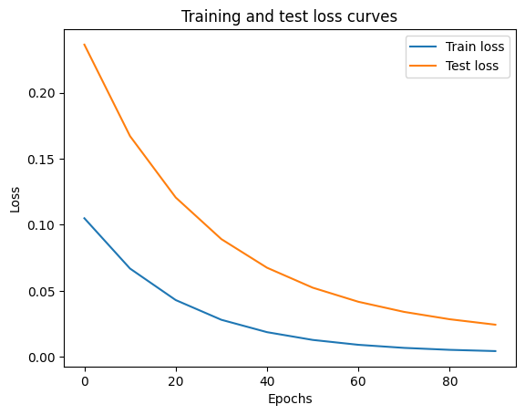
Nice! The loss curves show the loss going down over time. Remember, loss is the measure of how wrong your model is, so the lower the better.
# Find our model's learned parameters
print("The model learned the following values for weights and bias:")
print(model_0.state_dict())
print("\nAnd the original values for weights and bias are:")
print(f"weights: {weight}, bias: {bias}")
The model learned the following values for weights and bias:
OrderedDict({'weights': tensor([0.4600], device='cuda:0'), 'bias': tensor([0.3675], device='cuda:0')})
And the original values for weights and bias are:
weights: 0.7, bias: 0.3
Wow! How cool is that?
Try it yourself: Try changing the
epochsvalue above to 200, what happens to the loss curves and the weights and bias parameter values of the model?
It’d likely never guess them perfectly (especially when using more complicated datasets) but that’s okay, often you can do very cool things with a close approximation.
This is the whole idea of machine learning and deep learning, there are some ideal values that describe our data and rather than figuring them out by hand, we can train a model to figure them out programmatically.
3.5 Predicting with the model#
Once you’ve trained a model, you’ll likely want to make predictions with it.
We’ve already seen a glimpse of this in the training and testing code above, the steps to do it outside of the training/testing loop are similar.
There are three things to remember when making predictions (also called performing inference) with a PyTorch model:
Set the model in evaluation mode (
model.eval()).Make the predictions using the inference mode context manager (
with torch.inference_mode(): ...).All predictions should be made with objects on the same device (e.g. data and model on GPU only or data and model on CPU only).
The first two items make sure all helpful calculations and settings PyTorch uses behind the scenes during training but aren’t necessary for inference are turned off (this results in faster computation). And the third ensures that you won’t run into cross-device errors.
model_0.eval()
with torch.inference_mode():
y_preds = model_0(X_test)
y_preds
tensor([0.7355, 0.7447, 0.7539, 0.7631, 0.7723, 0.7815, 0.7907, 0.7999, 0.8091,
0.8183], device='cuda:0')
plot_predictions(predictions=y_preds.cpu())
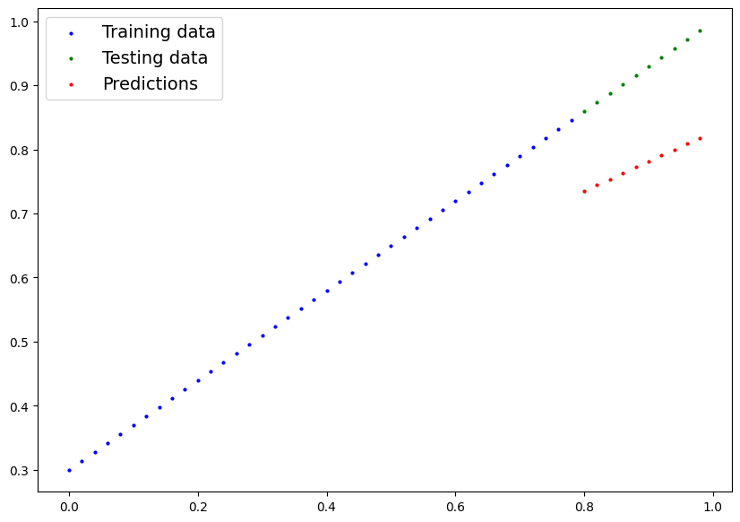
That’s pretty good! It’s getting closer to the actual values.
With some more training, we could definitely get to the real line!
3.6 Saving and loading a PyTorch model#
If you’ve trained a PyTorch model, chances are you’ll want to save it and export it somewhere.
As in, you might train it on Google Colab or your local machine with a GPU but you’d like to now export it to some sort of application where others can use it.
Or maybe you’d like to save your progress on a model and come back and load it back later.
For saving and loading models in PyTorch, there are three main methods you should be aware of (all of below have been taken from the PyTorch saving and loading models guide):
PyTorch method |
What does it do? |
|---|---|
Saves a serialized object to disk using Python’s |
|
Uses |
|
Loads a model’s parameter dictionary ( |
3.7 Saving a PyTorch model’s state_dict()#
The recommended way for saving and loading a model for inference (making predictions) is by saving and loading a model’s state_dict().
Let’s see how we can do that in a few steps:
We’ll create a directory for saving models to called
modelsusing Python’spathlibmodule.We’ll create a file path to save the model to.
We’ll call
torch.save(obj, f)whereobjis the target model’sstate_dict()andfis the filename of where to save the model.
Note: It’s common convention for PyTorch saved models or objects to end with
.ptor.pth, likesaved_model_01.pth.
from pathlib import Path
# 1. Create models directory
MODEL_PATH = Path("models")
MODEL_PATH.mkdir(parents=True, exist_ok=True)
# 2. Create model save path
MODEL_NAME = "my_linear_regressor.pth"
MODEL_SAVE_PATH = MODEL_PATH / MODEL_NAME
# 3. Save the model state dict
print(f"Saving model to: {MODEL_SAVE_PATH}")
torch.save(obj=model_0.state_dict(), # only saving the state_dict() only saves the models learned parameters
f=MODEL_SAVE_PATH)
Saving model to: models/my_linear_regressor.pth
3.8 Loading a saved PyTorch model’s state_dict()#
Since we’ve now got a saved model state_dict() at models/01_pytorch_workflow_model_0.pth we can now load it in using torch.nn.Module.load_state_dict(torch.load(f)) where f is the filepath of our saved model state_dict().
Why call torch.load() inside torch.nn.Module.load_state_dict()?
Because we only saved the model’s state_dict() which is a dictionary of learned parameters and not the entire model, we first have to load the state_dict() with torch.load() and then pass that state_dict() to a new instance of our model (which is a subclass of nn.Module).
Why not save the entire model?
Saving the entire model rather than just the state_dict() is more intuitive, however, to quote the PyTorch documentation (italics mine):
The disadvantage of this approach (saving the whole model) is that the serialized data is bound to the specific classes and the exact directory structure used when the model is saved…
Because of this, your code can break in various ways when used in other projects or after refactors.
So instead, we’re using the flexible method of saving and loading just the state_dict(), which again is basically a dictionary of model parameters.
Let’s test it out by creating another instance of LinearRegressionModel(), which is a subclass of torch.nn.Module and will hence have the in-built method load_state_dict().
# Instantiate a new instance of our model (this will be instantiated with random weights)
loaded_model_0 = LinearRegressionModel().to(device) # Note: It needs to be on the same device!
# Load the state_dict of our saved model (this will update the new instance of our model with trained weights)
loaded_model_0.load_state_dict(torch.load(f=MODEL_SAVE_PATH))
/tmp/ipykernel_706925/319717891.py:5: FutureWarning: You are using `torch.load` with `weights_only=False` (the current default value), which uses the default pickle module implicitly. It is possible to construct malicious pickle data which will execute arbitrary code during unpickling (See https://github.com/pytorch/pytorch/blob/main/SECURITY.md#untrusted-models for more details). In a future release, the default value for `weights_only` will be flipped to `True`. This limits the functions that could be executed during unpickling. Arbitrary objects will no longer be allowed to be loaded via this mode unless they are explicitly allowlisted by the user via `torch.serialization.add_safe_globals`. We recommend you start setting `weights_only=True` for any use case where you don't have full control of the loaded file. Please open an issue on GitHub for any issues related to this experimental feature.
loaded_model_0.load_state_dict(torch.load(f=MODEL_SAVE_PATH))
<All keys matched successfully>
loaded_model_0.eval()
with torch.inference_mode():
loaded_model_preds = loaded_model_0(X_test)
y_preds == loaded_model_preds
tensor([True, True, True, True, True, True, True, True, True, True],
device='cuda:0')
Excersise#
Create a straight line dataset using the linear regression formula (
weight * X + bias).Set
weight=0.3andbias=0.9there should be at least 100 datapoints total.Split the data into 80% training, 20% testing.
Plot the training and testing data so it becomes visual.
Try to model the following functions, how effective is the model?
\(y = 4x + 3\) over \([0,1]\)
\(y = x^2\) over \([-1, 1]\)
\(y = torch.sin(x)\) over \([0, 3.14159/2]\)
4 - Classification#
Before we do any coding, I’ll reitterate the anatomy of a classification neural network
Hyperparameter |
Binary Classification |
Multiclass classification |
|---|---|---|
Input layer shape ( |
Same as number of features (e.g. 5 for age, sex, height, weight, smoking status in heart disease prediction) |
Same as binary classification |
Hidden layer(s) |
Problem specific, minimum = 1, maximum = unlimited |
Same as binary classification |
Neurons per hidden layer |
Problem specific, generally 10 to 512 |
Same as binary classification |
Output layer shape ( |
1 (one class or the other) |
1 per class (e.g. 3 for food, person or dog photo) |
Hidden layer activation |
Usually ReLU (rectified linear unit) but can be many others |
Same as binary classification |
Output activation |
Sigmoid ( |
Softmax ( |
Loss function |
Binary crossentropy ( |
Cross entropy ( |
Optimizer |
SGD (stochastic gradient descent), Adam (see |
Same as binary classification |
4.1 Initializing our data#
from sklearn.datasets import make_circles
# Make 1000 points
n_samples = 1000
# Create circles
X, y = make_circles(n_samples,
noise=0.03,
random_state=42)
print(f"First 5 X features:\n{X[:5]}")
print(f"\nFirst 5 y labels:\n{y[:5]}")
First 5 X features:
[[ 0.75424625 0.23148074]
[-0.75615888 0.15325888]
[-0.81539193 0.17328203]
[-0.39373073 0.69288277]
[ 0.44220765 -0.89672343]]
First 5 y labels:
[1 1 1 1 0]
import pandas as pd
circles = pd.DataFrame({"X1": X[:, 0],
"X2": X[:, 1],
"label": y
})
circles.head(10)
| X1 | X2 | label | |
|---|---|---|---|
| 0 | 0.754246 | 0.231481 | 1 |
| 1 | -0.756159 | 0.153259 | 1 |
| 2 | -0.815392 | 0.173282 | 1 |
| 3 | -0.393731 | 0.692883 | 1 |
| 4 | 0.442208 | -0.896723 | 0 |
| 5 | -0.479646 | 0.676435 | 1 |
| 6 | -0.013648 | 0.803349 | 1 |
| 7 | 0.771513 | 0.147760 | 1 |
| 8 | -0.169322 | -0.793456 | 1 |
| 9 | -0.121486 | 1.021509 | 0 |
circles.label.value_counts()
label
1 500
0 500
Name: count, dtype: int64
import matplotlib.pyplot as plt
plt.scatter(x=X[:, 0],
y=X[:, 1],
c=y,
cmap=plt.cm.RdYlBu);
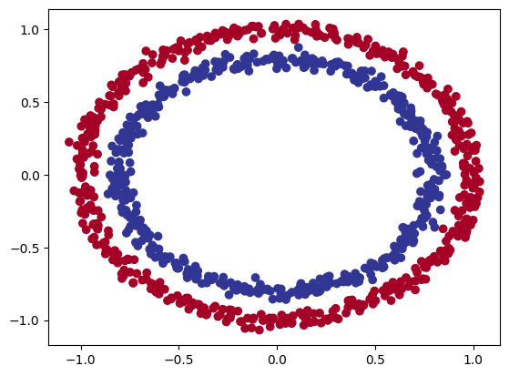
Alrighty, looks like we’ve got a problem to solve.
Let’s find out how we could build a PyTorch neural network to classify dots into red (0) or blue (1).
Note: This dataset is often what’s considered a toy problem (a problem that’s used to try and test things out on) in machine learning.
But it represents the major key of classification, you have some kind of data represented as numerical values and you’d like to build a model that’s able to classify it, in our case, separate it into red or blue dots.
4.2 Input and output shapes#
One of the most common errors in deep learning is shape errors.
Mismatching the shapes of tensors and tensor operations will result in errors in your models.
And there’s no surefire way to make sure they won’t happen, they just will.
What you can do instead is continually familiarize yourself with the shape of the data you’re working with.
Ask yourself:
“What shapes are my inputs and what shapes are my outputs?”
X.shape, y.shape
((1000, 2), (1000,))
Looks like we’ve got a match on the first dimension of each.
There’s 1000 X and 1000 y.
But what’s the second dimension on X?
It often helps to view the values and shapes of a single sample (features and labels).
Doing so will help you understand what input and output shapes you’d be expecting from your model.
# View the first example of features and labels
X_sample = X[0]
y_sample = y[0]
print(f"Values for one sample of X: {X_sample} and the same for y: {y_sample}")
print(f"Shapes for one sample of X: {X_sample.shape} and the same for y: {y_sample.shape}")
Values for one sample of X: [0.75424625 0.23148074] and the same for y: 1
Shapes for one sample of X: (2,) and the same for y: ()
This tells us the second dimension for X means it has two features (vector) where as y has a single feature (scalar).
We have two inputs for one output.
4.3 Splitting the data#
X = torch.from_numpy(X).type(torch.float)
y = torch.from_numpy(y).type(torch.float)
# View the first five samples
X[:5], y[:5]
(tensor([[ 0.7542, 0.2315],
[-0.7562, 0.1533],
[-0.8154, 0.1733],
[-0.3937, 0.6929],
[ 0.4422, -0.8967]]),
tensor([1., 1., 1., 1., 0.]))
Now our data is in tensor format, let’s split it into training and test sets.
To do so, let’s use the helpful function train_test_split() from Scikit-Learn.
We’ll use test_size=0.2 (80% training, 20% testing) and because the split happens randomly across the data, let’s use random_state=42 so the split is reproducible.
from sklearn.model_selection import train_test_split
X_train, X_test, y_train, y_test = train_test_split(X,
y,
test_size=0.2, # 20% test, 80% train
random_state=42) # make the random split reproducible
len(X_train), len(X_test), len(y_train), len(y_test)
(800, 200, 800, 200)
4.4 Building the model#
We’ve got some data ready, now it’s time to build a model.
We’ll break it down into a few parts.
Setting up device agnostic code (so our model can run on CPU or GPU if it’s available).
Constructing a model by subclassing
nn.Module.Defining a loss function and optimizer.
Creating a training loop (this’ll be in the next section).
The good news is we’ve been through all of the above steps before in notebook 01.
Except now we’ll be adjusting them so they work with a classification dataset.
Let’s start by importing PyTorch and torch.nn as well as setting up device agnostic code.
if torch.cuda.is_available():
device = "cuda" # Use NVIDIA GPU (if available)
elif torch.backends.mps.is_available():
device = "mps" # Use Apple Silicon GPU (if available)
else:
device = "cpu" # Default to CPU if no GPU is available
Excellent, now device is setup, we can use it for any data or models we create and PyTorch will handle it on the CPU (default) or GPU if it’s available.
How about we create a model?
We’ll want a model capable of handling our X data as inputs and producing something in the shape of our y data as outputs.
In other words, given X (features) we want our model to predict y (label).
This setup where you have features and labels is referred to as supervised learning. Because your data is telling your model what the outputs should be given a certain input.
To create such a model it’ll need to handle the input and output shapes of X and y.
Remember how I said input and output shapes are important? Here we’ll see why.
Let’s create a model class that:
Subclasses
nn.Module(almost all PyTorch models are subclasses ofnn.Module).Creates 2
nn.Linearlayers in the constructor capable of handling the input and output shapes ofXandy.Defines a
forward()method containing the forward pass computation of the model.Instantiates the model class and sends it to the target
device.
class CircleModelV0(nn.Module):
def __init__(self):
super().__init__()
self.layer_1 = nn.Linear(in_features=2, out_features=5) # takes in 2 features (X), produces 5 features
self.layer_2 = nn.Linear(in_features=5, out_features=1) # takes in 5 features, produces 1 feature (y)
def forward(self, x):
# computation goes through layer_1 first then the output of layer_1 goes through layer_2
return self.layer_2(self.layer_1(x))
model_0 = CircleModelV0().to(device)
model_0
CircleModelV0(
(layer_1): Linear(in_features=2, out_features=5, bias=True)
(layer_2): Linear(in_features=5, out_features=1, bias=True)
)
self.layer_1 takes 2 input features in_features=2 and produces 5 output features out_features=5.
This is known as having 5 hidden units or neurons.
This layer turns the input data from having 2 features to 5 features.
Why do this?
This allows the model to learn patterns from 5 numbers rather than just 2 numbers, potentially leading to better outputs.
The number of hidden units you can use in neural network layers is a hyperparameter (a value you can set yourself) and there’s no set in stone value you have to use.
Generally more is better but there’s also such a thing as too much. The amount you choose will depend on your model type and dataset you’re working with.
Since our dataset is small and simple, we’ll keep it small.
4.5 Loss and Optimizer#
Loss function/Optimizer |
Problem type |
PyTorch Code |
|---|---|---|
Stochastic Gradient Descent (SGD) optimizer |
Classification, regression, many others. |
|
Adam Optimizer |
Classification, regression, many others. |
|
Binary cross entropy loss |
Binary classification |
|
Cross entropy loss |
Multi-class classification |
|
Mean absolute error (MAE) or L1 Loss |
Regression |
|
Mean squared error (MSE) or L2 Loss |
Regression |
Table of various loss functions and optimizers, there are more but these are some common ones you’ll see.
Since we’re working with a binary classification problem, let’s use a binary cross entropy loss function.
PyTorch has two binary cross entropy implementations:
torch.nn.BCELoss()- Creates a loss function that measures the binary cross entropy between the target (label) and input (features).torch.nn.BCEWithLogitsLoss()- This is the same as above except it has a sigmoid layer (nn.Sigmoid) built-in.
Which one should you use?
The documentation for torch.nn.BCEWithLogitsLoss() states that it’s more numerically stable than using torch.nn.BCELoss() after a nn.Sigmoid layer.
So generally, implementation 2 is a better option. However for advanced usage, you may want to separate the combination of nn.Sigmoid and torch.nn.BCELoss().
Knowing this, let’s create a loss function and an optimizer.
For the optimizer we’ll use torch.optim.SGD() to optimize the model parameters with learning rate 0.1.
loss_fn = nn.BCEWithLogitsLoss()
optimizer = torch.optim.SGD(params=model_0.parameters(),
lr=0.1)
Now let’s also create an evaluation metric.
An evaluation metric can be used to offer another perspective on how your model is going.
If a loss function measures how wrong your model is, I like to think of evaluation metrics as measuring how right it is.
Of course, you could argue both of these are doing the same thing but evaluation metrics offer a different perspective.
After all, when evaluating your models it’s good to look at things from multiple points of view.
There are several evaluation metrics that can be used for classification problems but let’s start out with accuracy.
Accuracy can be measured by dividing the total number of correct predictions over the total number of predictions.
For example, a model that makes 99 correct predictions out of 100 will have an accuracy of 99%.
Let’s write a function to do so.
# Calculate accuracy (a classification metric)
def accuracy_fn(y_true, y_pred):
correct = torch.eq(y_true, y_pred).sum().item() # callback to my favorite function
acc = (correct / len(y_pred)) * 100
return acc
4.6 Train the model#
Before the training loop steps, let’s see what comes out of our model during the forward pass (the forward pass is defined by the forward() method).
To do so, let’s pass the model some data.
y_logits = model_0(X_test.to(device))[:5]
y_logits
tensor([[-0.0019],
[-0.1960],
[ 0.3412],
[-0.0985],
[ 0.0784]], device='cuda:0', grad_fn=<SliceBackward0>)
Since our model hasn’t been trained, these outputs are basically random.
But what are they?
They’re the output of our forward() method.
Which implements two layers of nn.Linear() which internally calls the following equation:
The raw outputs (unmodified) of this equation (\(y\)) and in turn, the raw outputs of our model are often referred to as logits.
That’s what our model is outputing above when it takes in the input data (\(x\) in the equation or X_test in the code), logits.
However, these numbers are hard to interpret.
We’d like some numbers that are comparable to our truth labels.
To get our model’s raw outputs (logits) into such a form, we can use the sigmoid activation function.
Let’s try it out.
y_pred_probs = torch.sigmoid(y_logits)
y_pred_probs
tensor([[0.4995],
[0.4512],
[0.5845],
[0.4754],
[0.5196]], device='cuda:0', grad_fn=<SigmoidBackward0>)
Okay, it seems like the outputs now have some kind of consistency (even though they’re still random).
They’re now in the form of prediction probabilities (I usually refer to these as y_pred_probs), in other words, the values are now how much the model thinks the data point belongs to one class or another.
In our case, since we’re dealing with binary classification, our ideal outputs are 0 or 1.
So these values can be viewed as a decision boundary.
The closer to 0, the more the model thinks the sample belongs to class 0, the closer to 1, the more the model thinks the sample belongs to class 1.
More specificially:
If
y_pred_probs>= 0.5,y=1(class 1)If
y_pred_probs< 0.5,y=0(class 0)
To turn our prediction probabilities into prediction labels, we can round the outputs of the sigmoid activation function.
# Find the predicted labels (round the prediction probabilities)
y_preds = torch.round(y_pred_probs)
# In full
y_pred_labels = torch.round(torch.sigmoid(model_0(X_test.to(device))[:5]))
# Check for equality
print(torch.eq(y_preds.squeeze(), y_pred_labels.squeeze()))
# Get rid of extra dimension
y_preds.squeeze()
tensor([True, True, True, True, True], device='cuda:0')
tensor([0., 0., 1., 0., 1.], device='cuda:0', grad_fn=<SqueezeBackward0>)
Excellent! Now it looks like our model’s predictions are in the same form as our truth labels (y_test).
y_test[:5]
tensor([1., 0., 1., 0., 1.])
This means we’ll be able to compare our model’s predictions to the test labels to see how well it’s performing.
To recap, we converted our model’s raw outputs (logits) to prediction probabilities using a sigmoid activation function.
And then converted the prediction probabilities to prediction labels by rounding them.
torch.manual_seed(42)
epochs = 1000
X_train, y_train = X_train.to(device), y_train.to(device)
X_test, y_test = X_test.to(device), y_test.to(device)
# Build training and evaluation loop
for epoch in range(epochs):
### Training
model_0.train()
# 1. Forward pass (model outputs raw logits)
y_logits = model_0(X_train).squeeze() # squeeze to remove extra `1` dimensions, this won't work unless model and data are on same device
y_pred = torch.round(torch.sigmoid(y_logits)) # turn logits -> pred probs -> pred labls
# 2. Calculate loss/accuracy
# loss = loss_fn(torch.sigmoid(y_logits), # Using nn.BCELoss you need torch.sigmoid()
# y_train)
loss = loss_fn(y_logits, # Using nn.BCEWithLogitsLoss works with raw logits
y_train)
acc = accuracy_fn(y_true=y_train,
y_pred=y_pred)
# 3. Optimizer zero grad
optimizer.zero_grad()
# 4. Loss backwards
loss.backward()
# 5. Optimizer step
optimizer.step()
### Testing
model_0.eval()
with torch.inference_mode():
# 1. Forward pass
test_logits = model_0(X_test).squeeze()
test_pred = torch.round(torch.sigmoid(test_logits))
# 2. Caculate loss/accuracy
test_loss = loss_fn(test_logits,
y_test)
test_acc = accuracy_fn(y_true=y_test,
y_pred=test_pred)
# Print out what's happening every 10 epochs
if epoch % 100 == 0:
print(f"Epoch: {epoch} | Loss: {loss:.5f}, Accuracy: {acc:.2f}% | Test loss: {test_loss:.5f}, Test acc: {test_acc:.2f}%")
Epoch: 0 | Loss: 0.70360, Accuracy: 50.00% | Test loss: 0.69341, Test acc: 52.50%
Epoch: 100 | Loss: 0.69553, Accuracy: 48.25% | Test loss: 0.69077, Test acc: 55.00%
Epoch: 200 | Loss: 0.69431, Accuracy: 48.75% | Test loss: 0.69134, Test acc: 52.50%
Epoch: 300 | Loss: 0.69383, Accuracy: 49.25% | Test loss: 0.69182, Test acc: 53.50%
Epoch: 400 | Loss: 0.69356, Accuracy: 49.25% | Test loss: 0.69219, Test acc: 54.00%
Epoch: 500 | Loss: 0.69340, Accuracy: 48.88% | Test loss: 0.69249, Test acc: 53.50%
Epoch: 600 | Loss: 0.69329, Accuracy: 49.62% | Test loss: 0.69274, Test acc: 52.00%
Epoch: 700 | Loss: 0.69322, Accuracy: 50.00% | Test loss: 0.69296, Test acc: 49.50%
Epoch: 800 | Loss: 0.69316, Accuracy: 50.00% | Test loss: 0.69315, Test acc: 48.00%
Epoch: 900 | Loss: 0.69312, Accuracy: 50.50% | Test loss: 0.69332, Test acc: 48.50%
Hmm, what do you notice about the performance of our model?
It looks like it went through the training and testing steps fine but the results don’t seem to have moved too much.
The accuracy barely moves above 50% on each data split.
And because we’re working with a balanced binary classification problem, it means our model is performing as good as random guessing (with 500 samples of class 0 and class 1 a model predicting class 1 every single time would achieve 50% accuracy).
Let’s take a look at the slides to see why this model fails.
4.7 Building a model with non-linearity#
n_samples = 1000
X, y = make_circles(n_samples=1000,
noise=0.03,
random_state=42,
)
plt.scatter(X[:, 0], X[:, 1], c=y, cmap=plt.cm.RdBu);
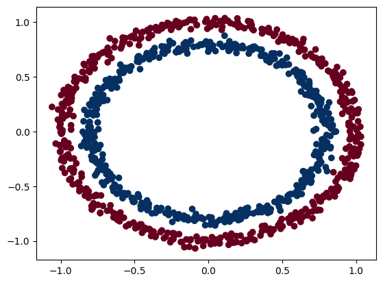
X = torch.from_numpy(X).type(torch.float)
y = torch.from_numpy(y).type(torch.float)
X_train, X_test, y_train, y_test = train_test_split(X,
y,
test_size=0.2,
random_state=42
)
X_train[:5], y_train[:5]
(tensor([[ 0.6579, -0.4651],
[ 0.6319, -0.7347],
[-1.0086, -0.1240],
[-0.9666, -0.2256],
[-0.1666, 0.7994]]),
tensor([1., 0., 0., 0., 1.]))
Now here comes the fun part.
What kind of pattern do you think you could draw with unlimited straight (linear) and non-straight (non-linear) lines?
I bet you could get pretty creative.
So far our neural networks have only been using linear (straight) line functions.
But the data we’ve been working with is non-linear (circles).
What do you think will happen when we introduce the capability for our model to use non-linear activation functions?
Well let’s see.
PyTorch has a bunch of ready-made non-linear activation functions that do similar but different things.
One of the most common and best performing is ReLU (rectified linear-unit, torch.nn.ReLU()).
Rather than talk about it, let’s put it in our neural network between the hidden layers in the forward pass and see what happens.
class CircleModelV1(nn.Module):
def __init__(self):
super().__init__()
self.layer_1 = nn.Linear(in_features=2, out_features=10)
self.layer_2 = nn.Linear(in_features=10, out_features=10)
self.layer_3 = nn.Linear(in_features=10, out_features=1)
self.relu = nn.ReLU() # <- add in ReLU activation function
# Can also put sigmoid in the model
# This would mean you don't need to use it on the predictions
# self.sigmoid = nn.Sigmoid()
def forward(self, x):
# Intersperse the ReLU activation function between layers
return self.layer_3(self.relu(self.layer_2(self.relu(self.layer_1(x)))))
model_1 = CircleModelV1().to(device)
print(model_1)
CircleModelV1(
(layer_1): Linear(in_features=2, out_features=10, bias=True)
(layer_2): Linear(in_features=10, out_features=10, bias=True)
(layer_3): Linear(in_features=10, out_features=1, bias=True)
(relu): ReLU()
)
loss_fn = nn.BCEWithLogitsLoss()
optimizer = torch.optim.SGD(model_1.parameters(), lr=0.1)
torch.manual_seed(42)
epochs = 1000
X_train, y_train = X_train.to(device), y_train.to(device)
X_test, y_test = X_test.to(device), y_test.to(device)
for epoch in range(epochs):
y_logits = model_1(X_train).squeeze()
y_pred = torch.round(torch.sigmoid(y_logits))
loss = loss_fn(y_logits, y_train)
acc = accuracy_fn(y_true=y_train,
y_pred=y_pred)
optimizer.zero_grad()
loss.backward()
optimizer.step()
model_1.eval()
with torch.inference_mode():
test_logits = model_1(X_test).squeeze()
test_pred = torch.round(torch.sigmoid(test_logits))
test_loss = loss_fn(test_logits, y_test)
test_acc = accuracy_fn(y_true=y_test,
y_pred=test_pred)
if epoch % 100 == 0:
print(f"Epoch: {epoch} | Loss: {loss:.5f}, Accuracy: {acc:.2f}% | Test Loss: {test_loss:.5f}, Test Accuracy: {test_acc:.2f}%")
Epoch: 0 | Loss: 0.69295, Accuracy: 50.00% | Test Loss: 0.69319, Test Accuracy: 50.00%
Epoch: 100 | Loss: 0.69115, Accuracy: 52.88% | Test Loss: 0.69102, Test Accuracy: 52.50%
Epoch: 200 | Loss: 0.68977, Accuracy: 53.37% | Test Loss: 0.68940, Test Accuracy: 55.00%
Epoch: 300 | Loss: 0.68795, Accuracy: 53.00% | Test Loss: 0.68723, Test Accuracy: 56.00%
Epoch: 400 | Loss: 0.68517, Accuracy: 52.75% | Test Loss: 0.68411, Test Accuracy: 56.50%
Epoch: 500 | Loss: 0.68102, Accuracy: 52.75% | Test Loss: 0.67941, Test Accuracy: 56.50%
Epoch: 600 | Loss: 0.67515, Accuracy: 54.50% | Test Loss: 0.67285, Test Accuracy: 56.00%
Epoch: 700 | Loss: 0.66659, Accuracy: 58.38% | Test Loss: 0.66322, Test Accuracy: 59.00%
Epoch: 800 | Loss: 0.65160, Accuracy: 64.00% | Test Loss: 0.64757, Test Accuracy: 67.50%
Epoch: 900 | Loss: 0.62362, Accuracy: 74.00% | Test Loss: 0.62145, Test Accuracy: 79.00%
4.8 Visualizing non-linear activation functions#
We saw before how adding non-linear activation functions to our model can help it to model non-linear data.
But what does a non-linear activation look like?
How about we replicate some and what they do?
Let’s start by creating a small amount of data.
# Create a toy tensor (similar to the data going into our model(s))
A = torch.arange(-10, 10, 1, dtype=torch.float32)
A
tensor([-10., -9., -8., -7., -6., -5., -4., -3., -2., -1., 0., 1.,
2., 3., 4., 5., 6., 7., 8., 9.])
# Visualize the toy tensor
plt.plot(A);
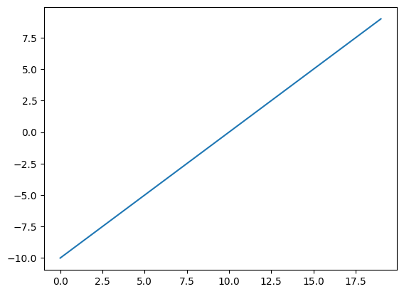
A straight line, nice.
Now let’s see how the ReLU activation function influences it.
And instead of using PyTorch’s ReLU (torch.nn.ReLU), we’ll recreate it ourselves.
The ReLU function turns all negatives to 0 and leaves the positive values as they are.
# Create ReLU function by hand
def relu(x):
return torch.maximum(torch.tensor(0), x) # inputs must be tensors
# Pass toy tensor through ReLU function
print(relu(A))
plt.plot(relu(A))
tensor([0., 0., 0., 0., 0., 0., 0., 0., 0., 0., 0., 1., 2., 3., 4., 5., 6., 7.,
8., 9.])
[<matplotlib.lines.Line2D at 0x7bab6b246e40>]
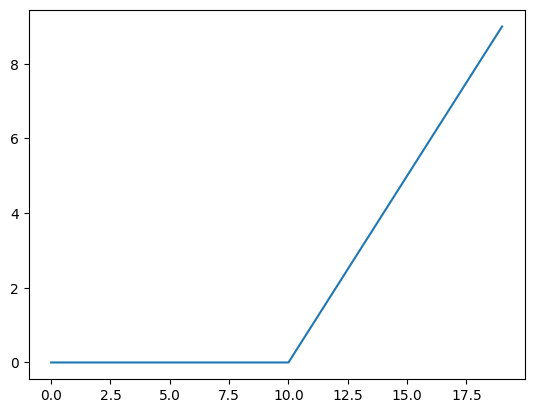
How about we try the sigmoid function we’ve been using?
The sigmoid function formula goes like this:
Where \(S\) stands for sigmoid, \(e\) stands for exponential (torch.exp()) and \(i\) stands for a particular element in a tensor.
Let’s build a function to replicate the sigmoid function with PyTorch.
# Create a custom sigmoid function
def sigmoid(x):
return 1 / (1 + torch.exp(-x))
# Test custom sigmoid on toy tensor
print(sigmoid(A))
plt.plot(sigmoid(A))
tensor([4.5398e-05, 1.2339e-04, 3.3535e-04, 9.1105e-04, 2.4726e-03, 6.6929e-03,
1.7986e-02, 4.7426e-02, 1.1920e-01, 2.6894e-01, 5.0000e-01, 7.3106e-01,
8.8080e-01, 9.5257e-01, 9.8201e-01, 9.9331e-01, 9.9753e-01, 9.9909e-01,
9.9966e-01, 9.9988e-01])
[<matplotlib.lines.Line2D at 0x7bab65c1d220>]
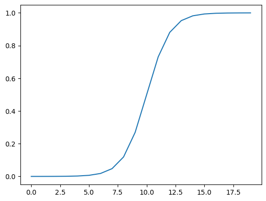
Looking good! We’ve gone from a straight line to a curved line.
Now there’s plenty more non-linear activation functions that exist in PyTorch that we haven’t tried.
But these two are two of the most common.
And the point remains, what patterns could you draw using an unlimited amount of linear (straight) and non-linear (not straight) lines?
Almost anything right?
That’s exactly what our model is doing when we combine linear and non-linear functions.
Instead of telling our model what to do, we give it tools to figure out how to best discover patterns in the data.
And those tools are linear and non-linear functions.
4.9 Multiclass Classification#
We’ve covered a fair bit.
But now let’s put it all together using a multi-class classification problem.
This time less yapping, and more coding.
# Import dependencies
import torch
import matplotlib.pyplot as plt
from sklearn.datasets import make_blobs
from sklearn.model_selection import train_test_split
# Set the hyperparameters for data creation
NUM_CLASSES = 4
NUM_FEATURES = 2
RANDOM_SEED = 42
# 1. Create multi-class data
X_blob, y_blob = make_blobs(n_samples=1000,
n_features=NUM_FEATURES, # X features
centers=NUM_CLASSES, # y labels
cluster_std=1.5, # give the clusters a little shake up (try changing this to 1.0, the default)
random_state=RANDOM_SEED
)
# 2. Turn data into tensors
X_blob = torch.from_numpy(X_blob).type(torch.float)
y_blob = torch.from_numpy(y_blob).type(torch.LongTensor)
print(X_blob[:5], y_blob[:5])
# 3. Split into train and test sets
X_blob_train, X_blob_test, y_blob_train, y_blob_test = train_test_split(X_blob,
y_blob,
test_size=0.2,
random_state=RANDOM_SEED
)
# 4. Plot data
plt.figure(figsize=(10, 7))
plt.scatter(X_blob[:, 0], X_blob[:, 1], c=y_blob, cmap=plt.cm.RdYlBu);
tensor([[-8.4134, 6.9352],
[-5.7665, -6.4312],
[-6.0421, -6.7661],
[ 3.9508, 0.6984],
[ 4.2505, -0.2815]]) tensor([3, 2, 2, 1, 1])
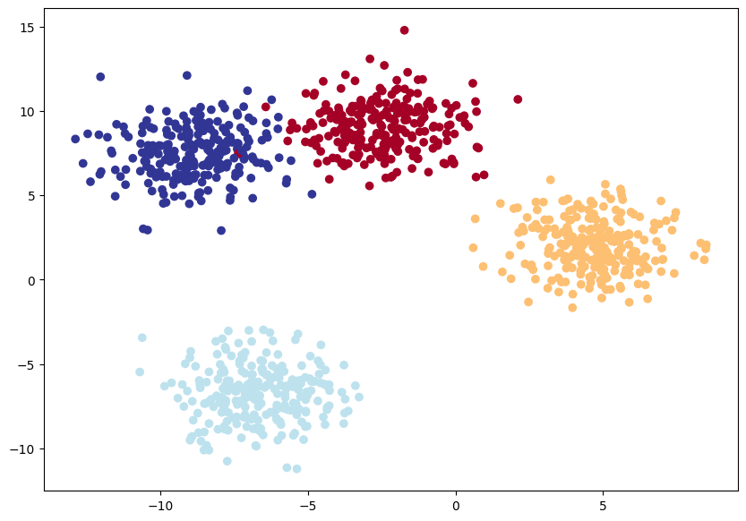
if torch.cuda.is_available():
device = "cuda" # Use NVIDIA GPU (if available)
elif torch.backends.mps.is_available():
device = "mps" # Use Apple Silicon GPU (if available)
else:
device = "cpu" # Default to CPU if no GPU is available
class BlobModel(nn.Module):
def __init__(self, input_features, output_features, hidden_units=8):
"""Initializes all required hyperparameters for a multi-class classification model.
Args:
input_features (int): Number of input features to the model.
out_features (int): Number of output features of the model
(how many classes there are).
hidden_units (int): Number of hidden units between layers, default 8.
"""
super().__init__()
self.linear_layer_stack = nn.Sequential(
nn.Linear(in_features=input_features, out_features=hidden_units),
# nn.ReLU(),
nn.Linear(in_features=hidden_units, out_features=hidden_units),
# nn.ReLU(),
nn.Linear(in_features=hidden_units, out_features=output_features),
)
def forward(self, x):
return self.linear_layer_stack(x)
# Create an instance of BlobModel and send it to the target device
model_2 = BlobModel(input_features=NUM_FEATURES,
output_features=NUM_CLASSES,
hidden_units=8).to(device)
model_2
BlobModel(
(linear_layer_stack): Sequential(
(0): Linear(in_features=2, out_features=8, bias=True)
(1): Linear(in_features=8, out_features=8, bias=True)
(2): Linear(in_features=8, out_features=4, bias=True)
)
)
# Create loss and optimizer
loss_fn = nn.CrossEntropyLoss()
optimizer = torch.optim.SGD(model_2.parameters(),
lr=0.1)
# Perform a single forward pass on the data (we'll need to put it to the target device for it to work)
model_2(X_blob_train.to(device))[:5]
tensor([[-1.2711, -0.6494, -1.4740, -0.7044],
[ 0.2210, -1.5439, 0.0420, 1.1531],
[ 2.8698, 0.9143, 3.3169, 1.4027],
[ 1.9576, 0.3125, 2.2244, 1.1324],
[ 0.5458, -1.2381, 0.4441, 1.1804]], device='cuda:0',
grad_fn=<SliceBackward0>)
# How many elements in a single prediction sample?
model_2(X_blob_train.to(device))[0].shape, NUM_CLASSES
(torch.Size([4]), 4)
What’s coming out here?
It looks like we get one logit per feature of each sample, but what if we wanted to figure out exactly which label is was giving the sample?
As in, how do we go from logits -> prediction probabilities -> prediction labels just like we did with the binary classification problem?
That’s where the softmax activation function comes into play.
The softmax function calculates the probability of each prediction class being the actual predicted class compared to all other possible classes.
# Make prediction logits with model
y_logits = model_2(X_blob_test.to(device))
# Perform softmax calculation on logits across dimension 1 to get prediction probabilities
y_pred_probs = torch.softmax(y_logits, dim=1)
print(y_logits[0])
print(y_pred_probs[0])
torch.sum(y_pred_probs[0])
tensor([-1.2549, -0.8112, -1.4795, -0.5696], device='cuda:0',
grad_fn=<SelectBackward0>)
tensor([0.1872, 0.2918, 0.1495, 0.3715], device='cuda:0',
grad_fn=<SelectBackward0>)
tensor(1., device='cuda:0', grad_fn=<SumBackward0>)
These prediction probabilities are essentially saying how much the model thinks the target X sample (the input) maps to each class.
Since there’s one value for each class in y_pred_probs, the index of the highest value is the class the model thinks the specific data sample most belongs to.
We can check which index has the highest value using torch.argmax().
# Which class does the model think is *most* likely at the index 0 sample?
print(y_pred_probs[0])
print(torch.argmax(y_pred_probs[0]))
tensor([0.1872, 0.2918, 0.1495, 0.3715], device='cuda:0',
grad_fn=<SelectBackward0>)
tensor(3, device='cuda:0')
You can see the output of torch.argmax() returns 3, so for the features (X) of the sample at index 0, the model is predicting that the most likely class value (y) is 3.
Of course, right now this is just random guessing so it’s got a 25% chance of being right (since there’s four classes). But we can improve those chances by training the model.
torch.manual_seed(42)
epochs = 100
X_blob_train, y_blob_train = X_blob_train.to(device), y_blob_train.to(device)
X_blob_test, y_blob_test = X_blob_test.to(device), y_blob_test.to(device)
for epoch in range(epochs):
model_2.train()
y_logits = model_2(X_blob_train) # model outputs raw logits
y_pred = torch.softmax(y_logits, dim=1).argmax(dim=1) # go from logits -> prediction probabilities -> prediction labels
loss = loss_fn(y_logits, y_blob_train)
acc = accuracy_fn(y_true=y_blob_train,
y_pred=y_pred)
optimizer.zero_grad()
loss.backward()
optimizer.step()
model_2.eval()
with torch.inference_mode():
test_logits = model_2(X_blob_test)
test_pred = torch.softmax(test_logits, dim=1).argmax(dim=1)
test_loss = loss_fn(test_logits, y_blob_test)
test_acc = accuracy_fn(y_true=y_blob_test,
y_pred=test_pred)
# Print out what's happening
if epoch % 10 == 0:
print(f"Epoch: {epoch} | Loss: {loss:.5f}, Acc: {acc:.2f}% | Test Loss: {test_loss:.5f}, Test Acc: {test_acc:.2f}%")
Epoch: 0 | Loss: 1.04324, Acc: 65.50% | Test Loss: 0.57861, Test Acc: 95.50%
Epoch: 10 | Loss: 0.14398, Acc: 99.12% | Test Loss: 0.13037, Test Acc: 99.00%
Epoch: 20 | Loss: 0.08062, Acc: 99.12% | Test Loss: 0.07216, Test Acc: 99.50%
Epoch: 30 | Loss: 0.05924, Acc: 99.12% | Test Loss: 0.05133, Test Acc: 99.50%
Epoch: 40 | Loss: 0.04892, Acc: 99.00% | Test Loss: 0.04098, Test Acc: 99.50%
Epoch: 50 | Loss: 0.04295, Acc: 99.00% | Test Loss: 0.03486, Test Acc: 99.50%
Epoch: 60 | Loss: 0.03910, Acc: 99.00% | Test Loss: 0.03083, Test Acc: 99.50%
Epoch: 70 | Loss: 0.03643, Acc: 99.00% | Test Loss: 0.02799, Test Acc: 99.50%
Epoch: 80 | Loss: 0.03448, Acc: 99.00% | Test Loss: 0.02587, Test Acc: 99.50%
Epoch: 90 | Loss: 0.03300, Acc: 99.12% | Test Loss: 0.02423, Test Acc: 99.50%
Looks good! We were able to sucessfully classify which blob a point belongs in based with just the inputs!
4.10 More classification evaluation metrics#
So far we’ve only covered a couple of ways of evaluating a classification model (accuracy, loss and visualizing predictions).
These are some of the most common methods you’ll come across and are a good starting point.
However, you may want to evaluate your classification model using more metrics such as the following:
Metric name/Evaluation method |
Defintion |
Code |
|---|---|---|
Accuracy |
Out of 100 predictions, how many does your model get correct? E.g. 95% accuracy means it gets 95/100 predictions correct. |
|
Precision |
Proportion of true positives over total number of samples. Higher precision leads to less false positives (model predicts 1 when it should’ve been 0). |
|
Recall |
Proportion of true positives over total number of true positives and false negatives (model predicts 0 when it should’ve been 1). Higher recall leads to less false negatives. |
|
F1-score |
Combines precision and recall into one metric. 1 is best, 0 is worst. |
|
Compares the predicted values with the true values in a tabular way, if 100% correct, all values in the matrix will be top left to bottom right (diagnol line). |
|
|
Classification report |
Collection of some of the main classification metrics such as precision, recall and f1-score. |
Scikit-Learn (a popular and world-class machine learning library) has many implementations of the above metrics and you’re looking for a PyTorch-like version, check out TorchMetrics, especially the TorchMetrics classification section.
Excersise#
We had some issues before plotting \(x^2\), using what we know now, give it a shot!
Using this website, play around with the following hyperparameters
Learning Rate
Activation function
Dataset
Using the following code as initialization, try training a binary classification model below (Identifies whether a tuple )
# Import dependencies
import torch
import matplotlib.pyplot as plt
from sklearn.datasets import make_moons
from sklearn.model_selection import train_test_split
RANDOM_SEED = 42
# 1. Create multi-class data
X_moons, y_moons = make_moons(n_samples=2500, noise=0.2, random_state=RANDOM_SEED)
# 2. Turn data into tensors
X_moons = torch.from_numpy(X_moons).type(torch.float)
y_moons = torch.from_numpy(y_moons).type(torch.LongTensor)
print(X_moons[:5], y_moons[:5])
# 3. Split into train and test sets
X_moons_train, X_moons_test, y_moons_train, y_moons_test = train_test_split(X_moons,
y_moons,
test_size=0.2,
random_state=RANDOM_SEED
)
# 4. Plot data
plt.figure(figsize=(10, 7))
plt.scatter(X_moons[:, 0], X_moons[:, 1], c=y_moons, cmap=plt.cm.RdYlBu);
tensor([[ 0.1833, -0.0088],
[-0.9521, 0.7417],
[-1.1362, 0.6758],
[ 1.7912, 0.1016],
[ 0.6752, -0.0231]]) tensor([1, 0, 0, 1, 1])
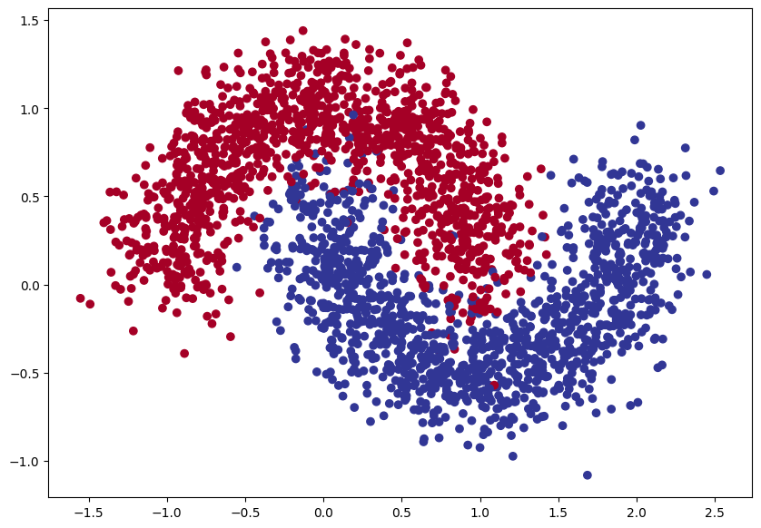
5 - Deep Computer Vision#
Computer vision is the art of teaching a computer to see.
For example, it could involve building a model to classify whether a photo is of a cat or a dog (binary classification).
Or whether a photo is of a cat, dog or chicken (multi-class classification).
Or identifying where a car appears in a video frame (object detection).
Or figuring out where different objects in an image can be separated (panoptic segmentation).
Example computer vision problems for binary classification, multiclass classification, object detection and segmentation.
5.1 Initializing our data#
Where does computer vision get used?#
If you use a smartphone, you’ve already used computer vision.
Camera and photo apps use computer vision to enhance and sort images.
Modern cars use computer vision to avoid other cars and stay within lane lines.
Manufacturers use computer vision to identify defects in various products.
Security cameras use computer vision to detect potential intruders.
In essence, anything that can be described in a visual sense can be a potential computer vision problem.
Before we get started writing code, let’s talk about some PyTorch computer vision libraries you should be aware of.
PyTorch module |
What does it do? |
|---|---|
Contains datasets, model architectures and image transformations often used for computer vision problems. |
|
Here you’ll find many example computer vision datasets for a range of problems from image classification, object detection, image captioning, video classification and more. It also contains a series of base classes for making custom datasets. |
|
This module contains well-performing and commonly used computer vision model architectures implemented in PyTorch, you can use these with your own problems. |
|
Often images need to be transformed (turned into numbers/processed/augmented) before being used with a model, common image transformations are found here. |
|
Base dataset class for PyTorch. |
|
Creates a Python iterable over a dataset (created with |
Note: The
torch.utils.data.Datasetandtorch.utils.data.DataLoaderclasses aren’t only for computer vision in PyTorch, they are capable of dealing with many different types of data.
Now we’ve covered some of the most important PyTorch computer vision libraries, let’s import the relevant dependencies.
import torch
from torch import nn
import torchvision
from torchvision import datasets
from torchvision.transforms import ToTensor
import matplotlib.pyplot as plt
MNIST stands for Modified National Institute of Standards and Technology.
The original MNIST dataset contains thousands of examples of handwritten digits (from 0 to 9) and was used to build computer vision models to identify numbers for postal services.
FashionMNIST, made by Zalando Research, is a similar setup.
Except it contains grayscale images of 10 different kinds of clothing.
# Setup training data
train_data = datasets.FashionMNIST(
root="data", # where to download data to?
train=True, # get training data
download=True, # download data if it doesn't exist on disk
transform=ToTensor(), # images come as PIL format, we want to turn into Torch tensors
target_transform=None # you can transform labels as well
)
# Setup testing data
test_data = datasets.FashionMNIST(
root="data",
train=False, # get test data
download=True,
transform=ToTensor()
)
image, label = train_data[0]
image, label
(tensor([[[0.0000, 0.0000, 0.0000, 0.0000, 0.0000, 0.0000, 0.0000, 0.0000,
0.0000, 0.0000, 0.0000, 0.0000, 0.0000, 0.0000, 0.0000, 0.0000,
0.0000, 0.0000, 0.0000, 0.0000, 0.0000, 0.0000, 0.0000, 0.0000,
0.0000, 0.0000, 0.0000, 0.0000],
[0.0000, 0.0000, 0.0000, 0.0000, 0.0000, 0.0000, 0.0000, 0.0000,
0.0000, 0.0000, 0.0000, 0.0000, 0.0000, 0.0000, 0.0000, 0.0000,
0.0000, 0.0000, 0.0000, 0.0000, 0.0000, 0.0000, 0.0000, 0.0000,
0.0000, 0.0000, 0.0000, 0.0000],
[0.0000, 0.0000, 0.0000, 0.0000, 0.0000, 0.0000, 0.0000, 0.0000,
0.0000, 0.0000, 0.0000, 0.0000, 0.0000, 0.0000, 0.0000, 0.0000,
0.0000, 0.0000, 0.0000, 0.0000, 0.0000, 0.0000, 0.0000, 0.0000,
0.0000, 0.0000, 0.0000, 0.0000],
[0.0000, 0.0000, 0.0000, 0.0000, 0.0000, 0.0000, 0.0000, 0.0000,
0.0000, 0.0000, 0.0000, 0.0000, 0.0039, 0.0000, 0.0000, 0.0510,
0.2863, 0.0000, 0.0000, 0.0039, 0.0157, 0.0000, 0.0000, 0.0000,
0.0000, 0.0039, 0.0039, 0.0000],
[0.0000, 0.0000, 0.0000, 0.0000, 0.0000, 0.0000, 0.0000, 0.0000,
0.0000, 0.0000, 0.0000, 0.0000, 0.0118, 0.0000, 0.1412, 0.5333,
0.4980, 0.2431, 0.2118, 0.0000, 0.0000, 0.0000, 0.0039, 0.0118,
0.0157, 0.0000, 0.0000, 0.0118],
[0.0000, 0.0000, 0.0000, 0.0000, 0.0000, 0.0000, 0.0000, 0.0000,
0.0000, 0.0000, 0.0000, 0.0000, 0.0235, 0.0000, 0.4000, 0.8000,
0.6902, 0.5255, 0.5647, 0.4824, 0.0902, 0.0000, 0.0000, 0.0000,
0.0000, 0.0471, 0.0392, 0.0000],
[0.0000, 0.0000, 0.0000, 0.0000, 0.0000, 0.0000, 0.0000, 0.0000,
0.0000, 0.0000, 0.0000, 0.0000, 0.0000, 0.0000, 0.6078, 0.9255,
0.8118, 0.6980, 0.4196, 0.6118, 0.6314, 0.4275, 0.2510, 0.0902,
0.3020, 0.5098, 0.2824, 0.0588],
[0.0000, 0.0000, 0.0000, 0.0000, 0.0000, 0.0000, 0.0000, 0.0000,
0.0000, 0.0000, 0.0000, 0.0039, 0.0000, 0.2706, 0.8118, 0.8745,
0.8549, 0.8471, 0.8471, 0.6392, 0.4980, 0.4745, 0.4784, 0.5725,
0.5529, 0.3451, 0.6745, 0.2588],
[0.0000, 0.0000, 0.0000, 0.0000, 0.0000, 0.0000, 0.0000, 0.0000,
0.0000, 0.0039, 0.0039, 0.0039, 0.0000, 0.7843, 0.9098, 0.9098,
0.9137, 0.8980, 0.8745, 0.8745, 0.8431, 0.8353, 0.6431, 0.4980,
0.4824, 0.7686, 0.8980, 0.0000],
[0.0000, 0.0000, 0.0000, 0.0000, 0.0000, 0.0000, 0.0000, 0.0000,
0.0000, 0.0000, 0.0000, 0.0000, 0.0000, 0.7176, 0.8824, 0.8471,
0.8745, 0.8941, 0.9216, 0.8902, 0.8784, 0.8706, 0.8784, 0.8667,
0.8745, 0.9608, 0.6784, 0.0000],
[0.0000, 0.0000, 0.0000, 0.0000, 0.0000, 0.0000, 0.0000, 0.0000,
0.0000, 0.0000, 0.0000, 0.0000, 0.0000, 0.7569, 0.8941, 0.8549,
0.8353, 0.7765, 0.7059, 0.8314, 0.8235, 0.8275, 0.8353, 0.8745,
0.8627, 0.9529, 0.7922, 0.0000],
[0.0000, 0.0000, 0.0000, 0.0000, 0.0000, 0.0000, 0.0000, 0.0000,
0.0000, 0.0039, 0.0118, 0.0000, 0.0471, 0.8588, 0.8627, 0.8314,
0.8549, 0.7529, 0.6627, 0.8902, 0.8157, 0.8549, 0.8784, 0.8314,
0.8863, 0.7725, 0.8196, 0.2039],
[0.0000, 0.0000, 0.0000, 0.0000, 0.0000, 0.0000, 0.0000, 0.0000,
0.0000, 0.0000, 0.0235, 0.0000, 0.3882, 0.9569, 0.8706, 0.8627,
0.8549, 0.7961, 0.7765, 0.8667, 0.8431, 0.8353, 0.8706, 0.8627,
0.9608, 0.4667, 0.6549, 0.2196],
[0.0000, 0.0000, 0.0000, 0.0000, 0.0000, 0.0000, 0.0000, 0.0000,
0.0000, 0.0157, 0.0000, 0.0000, 0.2157, 0.9255, 0.8941, 0.9020,
0.8941, 0.9412, 0.9098, 0.8353, 0.8549, 0.8745, 0.9176, 0.8510,
0.8510, 0.8196, 0.3608, 0.0000],
[0.0000, 0.0000, 0.0039, 0.0157, 0.0235, 0.0275, 0.0078, 0.0000,
0.0000, 0.0000, 0.0000, 0.0000, 0.9294, 0.8863, 0.8510, 0.8745,
0.8706, 0.8588, 0.8706, 0.8667, 0.8471, 0.8745, 0.8980, 0.8431,
0.8549, 1.0000, 0.3020, 0.0000],
[0.0000, 0.0118, 0.0000, 0.0000, 0.0000, 0.0000, 0.0000, 0.0000,
0.0000, 0.2431, 0.5686, 0.8000, 0.8941, 0.8118, 0.8353, 0.8667,
0.8549, 0.8157, 0.8275, 0.8549, 0.8784, 0.8745, 0.8588, 0.8431,
0.8784, 0.9569, 0.6235, 0.0000],
[0.0000, 0.0000, 0.0000, 0.0000, 0.0706, 0.1725, 0.3216, 0.4196,
0.7412, 0.8941, 0.8627, 0.8706, 0.8510, 0.8863, 0.7843, 0.8039,
0.8275, 0.9020, 0.8784, 0.9176, 0.6902, 0.7373, 0.9804, 0.9725,
0.9137, 0.9333, 0.8431, 0.0000],
[0.0000, 0.2235, 0.7333, 0.8157, 0.8784, 0.8667, 0.8784, 0.8157,
0.8000, 0.8392, 0.8157, 0.8196, 0.7843, 0.6235, 0.9608, 0.7569,
0.8078, 0.8745, 1.0000, 1.0000, 0.8667, 0.9176, 0.8667, 0.8275,
0.8627, 0.9098, 0.9647, 0.0000],
[0.0118, 0.7922, 0.8941, 0.8784, 0.8667, 0.8275, 0.8275, 0.8392,
0.8039, 0.8039, 0.8039, 0.8627, 0.9412, 0.3137, 0.5882, 1.0000,
0.8980, 0.8667, 0.7373, 0.6039, 0.7490, 0.8235, 0.8000, 0.8196,
0.8706, 0.8941, 0.8824, 0.0000],
[0.3843, 0.9137, 0.7765, 0.8235, 0.8706, 0.8980, 0.8980, 0.9176,
0.9765, 0.8627, 0.7608, 0.8431, 0.8510, 0.9451, 0.2549, 0.2863,
0.4157, 0.4588, 0.6588, 0.8588, 0.8667, 0.8431, 0.8510, 0.8745,
0.8745, 0.8784, 0.8980, 0.1137],
[0.2941, 0.8000, 0.8314, 0.8000, 0.7569, 0.8039, 0.8275, 0.8824,
0.8471, 0.7255, 0.7725, 0.8078, 0.7765, 0.8353, 0.9412, 0.7647,
0.8902, 0.9608, 0.9373, 0.8745, 0.8549, 0.8314, 0.8196, 0.8706,
0.8627, 0.8667, 0.9020, 0.2627],
[0.1882, 0.7961, 0.7176, 0.7608, 0.8353, 0.7725, 0.7255, 0.7451,
0.7608, 0.7529, 0.7922, 0.8392, 0.8588, 0.8667, 0.8627, 0.9255,
0.8824, 0.8471, 0.7804, 0.8078, 0.7294, 0.7098, 0.6941, 0.6745,
0.7098, 0.8039, 0.8078, 0.4510],
[0.0000, 0.4784, 0.8588, 0.7569, 0.7020, 0.6706, 0.7176, 0.7686,
0.8000, 0.8235, 0.8353, 0.8118, 0.8275, 0.8235, 0.7843, 0.7686,
0.7608, 0.7490, 0.7647, 0.7490, 0.7765, 0.7529, 0.6902, 0.6118,
0.6549, 0.6941, 0.8235, 0.3608],
[0.0000, 0.0000, 0.2902, 0.7412, 0.8314, 0.7490, 0.6863, 0.6745,
0.6863, 0.7098, 0.7255, 0.7373, 0.7412, 0.7373, 0.7569, 0.7765,
0.8000, 0.8196, 0.8235, 0.8235, 0.8275, 0.7373, 0.7373, 0.7608,
0.7529, 0.8471, 0.6667, 0.0000],
[0.0078, 0.0000, 0.0000, 0.0000, 0.2588, 0.7843, 0.8706, 0.9294,
0.9373, 0.9490, 0.9647, 0.9529, 0.9569, 0.8667, 0.8627, 0.7569,
0.7490, 0.7020, 0.7137, 0.7137, 0.7098, 0.6902, 0.6510, 0.6588,
0.3882, 0.2275, 0.0000, 0.0000],
[0.0000, 0.0000, 0.0000, 0.0000, 0.0000, 0.0000, 0.0000, 0.1569,
0.2392, 0.1725, 0.2824, 0.1608, 0.1373, 0.0000, 0.0000, 0.0000,
0.0000, 0.0000, 0.0000, 0.0000, 0.0000, 0.0000, 0.0000, 0.0000,
0.0000, 0.0000, 0.0000, 0.0000],
[0.0000, 0.0000, 0.0000, 0.0000, 0.0000, 0.0000, 0.0000, 0.0000,
0.0000, 0.0000, 0.0000, 0.0000, 0.0000, 0.0000, 0.0000, 0.0000,
0.0000, 0.0000, 0.0000, 0.0000, 0.0000, 0.0000, 0.0000, 0.0000,
0.0000, 0.0000, 0.0000, 0.0000],
[0.0000, 0.0000, 0.0000, 0.0000, 0.0000, 0.0000, 0.0000, 0.0000,
0.0000, 0.0000, 0.0000, 0.0000, 0.0000, 0.0000, 0.0000, 0.0000,
0.0000, 0.0000, 0.0000, 0.0000, 0.0000, 0.0000, 0.0000, 0.0000,
0.0000, 0.0000, 0.0000, 0.0000]]]),
9)
image.shape
torch.Size([1, 28, 28])
The shape of the image tensor is [1, 28, 28] or more specifically:
[color_channels=1, height=28, width=28]
Having color_channels=1 means the image is grayscale.
If color_channels=3, the image comes in pixel values for red, green and blue.
The order of our current tensor is often referred to as CHW (Color Channels, Height, Width).
There’s debate on whether images should be represented as CHW (color channels first) or HWC (color channels last).
Note: You’ll also see
NCHWandNHWCformats whereNstands for number of images. For example if you have abatch_size=32, your tensor shape may be[32, 1, 28, 28]. We’ll cover batch sizes later.
PyTorch generally accepts NCHW (channels first) as the default for many operators.
However, PyTorch also explains that NHWC (channels last) performs better and is considered best practice.
For now, since our dataset and models are relatively small, this won’t make too much of a difference.
But keep it in mind for when you’re working on larger image datasets and using convolutional neural networks (we’ll see these later).
Let’s check out more shapes of our data.
len(train_data.data), len(train_data.targets), len(test_data.data), len(test_data.targets)
(60000, 60000, 10000, 10000)
class_names = train_data.classes
class_names
['T-shirt/top',
'Trouser',
'Pullover',
'Dress',
'Coat',
'Sandal',
'Shirt',
'Sneaker',
'Bag',
'Ankle boot']
Sweet! It looks like we’re dealing with 10 different kinds of clothes.
Because we’re working with 10 different classes, it means our problem is multi-class classification.
Let’s get visual.
import matplotlib.pyplot as plt
image, label = train_data[0]
print(f"Image shape: {image.shape}")
plt.imshow(image.squeeze(), cmap="grey") # image shape is [1, 28, 28] (colour channels, height, width)
plt.title(label);
Image shape: torch.Size([1, 28, 28])
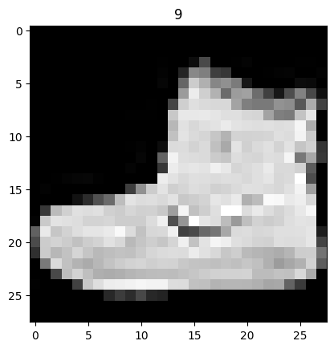
torch.manual_seed(42)
fig = plt.figure(figsize=(9, 9))
rows, cols = 4, 4
for i in range(1, rows * cols + 1):
random_idx = torch.randint(0, len(train_data), size=[1]).item()
img, label = train_data[random_idx]
fig.add_subplot(rows, cols, i)
plt.imshow(img.squeeze(), cmap="gray")
plt.title(class_names[label])
plt.axis(False);
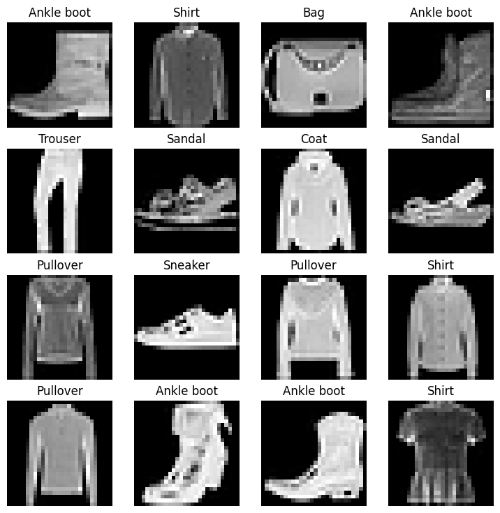
Hmmm, this dataset doesn’t look too aesthetic.
But the principles we’re going to learn on how to build a model for it will be similar across a wide range of computer vision problems.
In essence, taking pixel values and building a model to find patterns in them to use on future pixel values.
Plus, even for this small dataset (yes, even 60,000 images in deep learning is considered quite small), could you write a program to classify each one of them?
You probably could.
But I think coding a model in PyTorch would be faster.
from torch.utils.data import DataLoader
# Setup the batch size hyperparameter
BATCH_SIZE = 32
# Turn datasets into iterables (batches)
train_dataloader = DataLoader(train_data, # dataset to turn into iterable
batch_size=BATCH_SIZE, # how many samples per batch?
shuffle=True # shuffle data every epoch?
)
test_dataloader = DataLoader(test_data,
batch_size=BATCH_SIZE,
shuffle=False # don't necessarily have to shuffle the testing data
)
# Let's check out what we've created
print(f"Dataloaders: {train_dataloader, test_dataloader}")
print(f"Length of train dataloader: {len(train_dataloader)} batches of {BATCH_SIZE}")
print(f"Length of test dataloader: {len(test_dataloader)} batches of {BATCH_SIZE}")
Dataloaders: (<torch.utils.data.dataloader.DataLoader object at 0x7bab55573ef0>, <torch.utils.data.dataloader.DataLoader object at 0x7babab8ef230>)
Length of train dataloader: 1875 batches of 32
Length of test dataloader: 313 batches of 32
# Check out what's inside the training dataloader
train_features_batch, train_labels_batch = next(iter(train_dataloader))
train_features_batch.shape, train_labels_batch.shape
(torch.Size([32, 1, 28, 28]), torch.Size([32]))
5.2 Baseline model#
We’ve spent a lot of the last section building networks from scratch, let’s change that up.
A baseline model is one of the simplest models you can imagine.
You use the baseline as a starting point and try to improve upon it with subsequent, more complicated models.
Our baseline will consist of two nn.Linear() layers.
Because we’re working with image data, we’re going to use a different layer to start things off.
And that’s the nn.Flatten() layer.
nn.Flatten() compresses the dimensions of a tensor into a single vector.
This is easier to understand when you see it.
# Create a flatten layer
flatten_model = nn.Flatten()
# Get a single sample
x = train_features_batch[0]
# Flatten the sample
output = flatten_model(x)
# Print out what happened
print(f"Shape before flattening: {x.shape} -> [color_channels, height, width]")
print(f"Shape after flattening: {output.shape} -> [color_channels, height*width]")
Shape before flattening: torch.Size([1, 28, 28]) -> [color_channels, height, width]
Shape after flattening: torch.Size([1, 784]) -> [color_channels, height*width]
The nn.Flatten() layer took our shape from [color_channels, height, width] to [color_channels, height*width].
Why do this?
Because we’ve now turned our pixel data from height and width dimensions into one long feature vector.
And nn.Linear() layers like their inputs to be in the form of feature vectors.
Let’s create our first model using nn.Flatten() as the first layer.
class FashionMNISTModelV0(nn.Module):
def __init__(self, input_shape: int, hidden_units: int, output_shape: int):
super().__init__()
self.layer_stack = nn.Sequential(
nn.Flatten(), # neural networks like their inputs in rank 1 form
nn.Linear(in_features=input_shape, out_features=hidden_units),
nn.Linear(in_features=hidden_units, out_features=output_shape)
)
def forward(self, x):
return self.layer_stack(x)
We’ve got a baseline model class we can use, now let’s instantiate a model.
We’ll need to set the following parameters:
input_shape=784- this is how many features you’ve got going in the model, in our case, it’s one for every pixel in the target image (28 pixels high by 28 pixels wide = 784 features).hidden_units=10- number of units/neurons in the hidden layer(s), this number could be whatever you want but to keep the model small we’ll start with10.output_shape=len(class_names)- since we’re working with a multi-class classification problem, we need an output neuron per class in our dataset.
# Need to setup model with input parameters
model_0 = FashionMNISTModelV0(input_shape=784, # one for every pixel (28x28)
hidden_units=10, # how many units in the hidden layer
output_shape=len(class_names) # one for every class
)
def accuracy_fn(y_true, y_pred):
correct = torch.eq(y_true, y_pred).sum().item()
acc = (correct / len(y_pred)) * 100
return acc
loss_fn = nn.CrossEntropyLoss()
optimizer = torch.optim.SGD(params=model_0.parameters(), lr=0.1)
5.3 Training the baseline#
Looks like we’ve got all of the pieces of the puzzle ready to go, a timer, a loss function, an optimizer, a model and most importantly, some data.
Let’s now create a training loop and a testing loop to train and evaluate our model.
We’ll be using the same steps as earlier, though since our data is now in batch form, we’ll add another loop to loop through our data batches.
Our data batches are contained within our DataLoaders, train_dataloader and test_dataloader for the training and test data splits respectively.
A batch is BATCH_SIZE samples of X (features) and y (labels), since we’re using BATCH_SIZE=32, our batches have 32 samples of images and targets.
And since we’re computing on batches of data, our loss and evaluation metrics will be calculated per batch rather than across the whole dataset.
This means we’ll have to divide our loss and accuracy values by the number of batches in each dataset’s respective dataloader.
Let’s step through it:
Loop through epochs.
Loop through training batches, perform training steps, calculate the train loss per batch.
Loop through testing batches, perform testing steps, calculate the test loss per batch.
Print out what’s happening.
# Set the number of epochs (we'll keep this small for faster training times)
epochs = 3
# Create training and testing loop
for epoch in range(epochs):
print(f"Epoch: {epoch}\n-------")
### Training
train_loss = 0
# Add a loop to loop through training batches
for batch, (X, y) in enumerate(train_dataloader):
model_0.train()
# 1. Forward pass
y_pred = model_0(X)
# 2. Calculate loss (per batch)
loss = loss_fn(y_pred, y)
train_loss += loss # accumulatively add up the loss per epoch
# 3. Optimizer zero grad
optimizer.zero_grad()
# 4. Loss backward
loss.backward()
# 5. Optimizer step
optimizer.step()
# Print out how many samples have been seen
if batch % 400 == 0:
print(f"Looked at {batch * len(X)}/{len(train_dataloader.dataset)} samples")
# Divide total train loss by length of train dataloader (average loss per batch per epoch)
train_loss /= len(train_dataloader)
### Testing
# Setup variables for accumulatively adding up loss and accuracy
test_loss, test_acc = 0, 0
model_0.eval()
with torch.inference_mode():
for X, y in test_dataloader:
# 1. Forward pass
test_pred = model_0(X)
# 2. Calculate loss (accumulatively)
test_loss += loss_fn(test_pred, y) # accumulatively add up the loss per epoch
# 3. Calculate accuracy (preds need to be same as y_true)
test_acc += accuracy_fn(y, test_pred.argmax(dim=1))
# Calculations on test metrics need to happen inside torch.inference_mode()
# Divide total test loss by length of test dataloader (per batch)
test_loss /= len(test_dataloader)
# Divide total accuracy by length of test dataloader (per batch)
test_acc /= len(test_dataloader)
## Print out what's happening
print(f"\nTrain loss: {train_loss:.5f} | Test loss: {test_loss:.5f}, Test acc: {test_acc:.2f}%\n")
Epoch: 0
-------
Looked at 0/60000 samples
Looked at 12800/60000 samples
Looked at 25600/60000 samples
Looked at 38400/60000 samples
Looked at 51200/60000 samples
Train loss: 0.59129 | Test loss: 0.51254, Test acc: 81.26%
Epoch: 1
-------
Looked at 0/60000 samples
Looked at 12800/60000 samples
Looked at 25600/60000 samples
Looked at 38400/60000 samples
Looked at 51200/60000 samples
Train loss: 0.47573 | Test loss: 0.48376, Test acc: 83.18%
Epoch: 2
-------
Looked at 0/60000 samples
Looked at 12800/60000 samples
Looked at 25600/60000 samples
Looked at 38400/60000 samples
Looked at 51200/60000 samples
Train loss: 0.45380 | Test loss: 0.48737, Test acc: 82.60%
Nice! Looks like our baseline model did fairly well.
It didn’t take too long to train either, even just on the CPU, I wonder if it’ll speed up on the GPU?
Let’s write some code to evaluate our model.
# Move values to device
torch.manual_seed(42)
def eval_model(model: torch.nn.Module,
data_loader: torch.utils.data.DataLoader,
loss_fn: torch.nn.Module,
accuracy_fn,
device: torch.device = "cpu"):
"""Evaluates a given model on a given dataset.
Args:
model (torch.nn.Module): A PyTorch model capable of making predictions on data_loader.
data_loader (torch.utils.data.DataLoader): The target dataset to predict on.
loss_fn (torch.nn.Module): The loss function of model.
accuracy_fn: An accuracy function to compare the models predictions to the truth labels.
device (str, optional): Target device to compute on. Defaults to device.
Returns:
(dict): Results of model making predictions on data_loader.
"""
loss, acc = 0, 0
model.eval()
with torch.inference_mode():
for X, y in data_loader:
# Send data to the target device
X, y = X.to(device), y.to(device)
y_pred = model(X)
loss += loss_fn(y_pred, y)
acc += accuracy_fn(y_true=y, y_pred=y_pred.argmax(dim=1))
# Scale loss and acc
loss /= len(data_loader)
acc /= len(data_loader)
return {"model_name": model.__class__.__name__, # only works when model was created with a class
"model_loss": loss.item(),
"model_acc": acc}
model_0_results = eval_model(model=model_0, data_loader=test_dataloader,
loss_fn=loss_fn, accuracy_fn=accuracy_fn
)
pd.DataFrame(model_0_results.items())
| 0 | 1 | |
|---|---|---|
| 0 | model_name | FashionMNISTModelV0 |
| 1 | model_loss | 0.487372 |
| 2 | model_acc | 82.597843 |
5.4 Non-Linearity#
Considering how much we’ve been talking about non linear models, let’s try applying one
# Create a model with non-linear and linear layers
class FashionMNISTModelV1(nn.Module):
def __init__(self, input_shape: int, hidden_units: int, output_shape: int):
super().__init__()
self.layer_stack = nn.Sequential(
nn.Flatten(), # flatten inputs into single vector
nn.Linear(in_features=input_shape, out_features=hidden_units),
nn.ReLU(),
nn.Linear(in_features=hidden_units, out_features=output_shape),
nn.ReLU()
)
def forward(self, x: torch.Tensor):
return self.layer_stack(x)
model_1 = FashionMNISTModelV1(input_shape=784,
hidden_units=10,
output_shape=len(class_names)
).to(device)
next(model_1.parameters()).device # check model device
device(type='cuda', index=0)
loss_fn = nn.CrossEntropyLoss()
optimizer = torch.optim.SGD(params=model_1.parameters(), lr=0.1)
So far we’ve been writing train and test loops over and over.
Let’s write them again but this time we’ll put them in functions so they can be called again and again.
And because we’re using device-agnostic code now, we’ll be sure to call .to(device) on our feature (X) and target (y) tensors.
For the training loop we’ll create a function called train_step() which takes in a model, a DataLoader a loss function and an optimizer.
The testing loop will be similar but it’ll be called test_step() and it’ll take in a model, a DataLoader, a loss function and an evaluation function.
Note: Since these are functions, you can customize them in any way you like. What we’re making here can be considered barebones training and testing functions for our specific classification use case.
def train_step(model: torch.nn.Module,
data_loader: torch.utils.data.DataLoader,
loss_fn: torch.nn.Module,
optimizer: torch.optim.Optimizer,
accuracy_fn,
device: torch.device = 'cpu'):
train_loss, train_acc = 0, 0
model.to(device)
for batch, (X, y) in enumerate(data_loader):
# Send data to GPU
X, y = X.to(device), y.to(device)
# 1. Forward pass
y_pred = model(X)
# 2. Calculate loss
loss = loss_fn(y_pred, y)
train_loss += loss
train_acc += accuracy_fn(y, y_pred.argmax(dim=1))
# 3. Optimizer zero grad
optimizer.zero_grad()
# 4. Loss backward
loss.backward()
# 5. Optimizer step
optimizer.step()
# Calculate loss and accuracy per epoch and print out what's happening
train_loss /= len(data_loader)
train_acc /= len(data_loader)
print(f"Train loss: {train_loss:.5f} | Train accuracy: {train_acc:.2f}%")
def test_step(data_loader: torch.utils.data.DataLoader,
model: torch.nn.Module,
loss_fn: torch.nn.Module,
accuracy_fn,
device: torch.device = 'cpu'):
test_loss, test_acc = 0, 0
model.to(device)
model.eval() # put model in eval mode
# Turn on inference context manager
with torch.inference_mode():
for X, y in data_loader:
# Send data to GPU
X, y = X.to(device), y.to(device)
# 1. Forward pass
test_pred = model(X)
# 2. Calculate loss and accuracy
test_loss += loss_fn(test_pred, y)
test_acc += accuracy_fn(y, test_pred.argmax(dim=1))
# Adjust metrics and print out
test_loss /= len(data_loader)
test_acc /= len(data_loader)
print(f"Test loss: {test_loss:.5f} | Test accuracy: {test_acc:.2f}%\n")
epochs = 3
for epoch in range(epochs):
print(f"Epoch: {epoch}\n---------")
train_step(data_loader=train_dataloader,
model=model_1,
loss_fn=loss_fn,
optimizer=optimizer,
accuracy_fn=accuracy_fn,
device='cuda'
)
test_step(data_loader=test_dataloader,
model=model_1,
loss_fn=loss_fn,
accuracy_fn=accuracy_fn,
device='cuda'
)
Epoch: 0
---------
Train loss: 0.89086 | Train accuracy: 69.53%
Test loss: 0.74638 | Test accuracy: 73.55%
Epoch: 1
---------
Train loss: 0.67928 | Train accuracy: 75.34%
Test loss: 0.70205 | Test accuracy: 74.59%
Epoch: 2
---------
Train loss: 0.65077 | Train accuracy: 76.10%
Test loss: 0.67227 | Test accuracy: 75.26%
model_1_results = eval_model(model=model_1, data_loader=test_dataloader,
loss_fn=loss_fn, accuracy_fn=accuracy_fn, device=device
)
pd.DataFrame(model_1_results.items())
| 0 | 1 | |
|---|---|---|
| 0 | model_name | FashionMNISTModelV1 |
| 1 | model_loss | 0.672273 |
| 2 | model_acc | 75.259585 |
Our model trained but the training time took longer?
Note: The training time on CUDA vs CPU will depend largely on the quality of the CPU/GPU you’re using. Read on for a more explained answer.
Question: “I used a GPU but my model didn’t train faster, why might that be?”
Answer: Well, one reason could be because your dataset and model are both so small (like the dataset and model we’re working with) the benefits of using a GPU are outweighed by the time it actually takes to transfer the data there.
There’s a small bottleneck between copying data from the CPU memory (default) to the GPU memory.
So for smaller models and datasets, the CPU might actually be the optimal place to compute on.
But for larger datasets and models, the speed of computing the GPU can offer usually far outweighs the cost of getting the data there.
However, this is largely dependent on the hardware you’re using. With practice, you will get used to where the best place to train your models is.
5.5 Convolutional Neural Network#
Alright, time to step things up a notch.
It’s time to create a Convolutional Neural Network (CNN or ConvNet).
CNN’s are known for their capabilities to find patterns in visual data.
And since we’re dealing with visual data, let’s see if using a CNN model can improve upon our baseline.
The CNN model we’re going to be using is known as TinyVGG from the CNN Explainer website.
It follows the typical structure of a convolutional neural network:
Input layer -> [Convolutional layer -> activation layer -> pooling layer] -> Output layer
Where the contents of [Convolutional layer -> activation layer -> pooling layer] can be upscaled and repeated multiple times, depending on requirements.
What model should I use?#
Question: Wait, you say CNN’s are good for images, are there any other model types I should be aware of?
Good question.
This table is a good general guide for which model to use (though there are exceptions).
Problem type |
Model to use (generally) |
Code example |
|---|---|---|
Structured data (Excel spreadsheets, row and column data) |
Gradient boosted models, Random Forests, XGBoost |
|
Unstructured data (images, audio, language) |
Convolutional Neural Networks, Transformers |
Note: The table above is only for reference, the model you end up using will be highly dependent on the problem you’re working on and the constraints you have (amount of data, latency requirements).
# Create a convolutional neural network
class FashionMNISTModelV2(nn.Module):
def __init__(self, input_shape: int, hidden_units: int, output_shape: int):
super().__init__()
self.block_1 = nn.Sequential(
nn.Conv2d(in_channels=input_shape,
out_channels=hidden_units,
kernel_size=3, # how big is the square that's going over the image?
stride=1, # default
padding=1),# options = "valid" (no padding) or "same" (output has same shape as input) or int for specific number
nn.ReLU(),
nn.Conv2d(in_channels=hidden_units,
out_channels=hidden_units,
kernel_size=3,
stride=1,
padding=1),
nn.ReLU(),
nn.MaxPool2d(kernel_size=2,
stride=2) # default stride value is same as kernel_size
)
self.block_2 = nn.Sequential(
nn.Conv2d(hidden_units, hidden_units, 3, padding=1),
nn.ReLU(),
nn.Conv2d(hidden_units, hidden_units, 3, padding=1),
nn.ReLU(),
nn.MaxPool2d(2)
)
self.classifier = nn.Sequential(
nn.Flatten(),
# Where did this in_features shape come from?
# It's because each layer of our network compresses and changes the shape of our input data.
nn.Linear(in_features=hidden_units*7*7,
out_features=output_shape)
)
def forward(self, x: torch.Tensor):
x = self.block_1(x)
# print(x.shape)
x = self.block_2(x)
# print(x.shape)
x = self.classifier(x)
# print(x.shape)
return x
model_2 = FashionMNISTModelV2(input_shape=1,
hidden_units=10,
output_shape=len(class_names)).to(device)
model_2
FashionMNISTModelV2(
(block_1): Sequential(
(0): Conv2d(1, 10, kernel_size=(3, 3), stride=(1, 1), padding=(1, 1))
(1): ReLU()
(2): Conv2d(10, 10, kernel_size=(3, 3), stride=(1, 1), padding=(1, 1))
(3): ReLU()
(4): MaxPool2d(kernel_size=2, stride=2, padding=0, dilation=1, ceil_mode=False)
)
(block_2): Sequential(
(0): Conv2d(10, 10, kernel_size=(3, 3), stride=(1, 1), padding=(1, 1))
(1): ReLU()
(2): Conv2d(10, 10, kernel_size=(3, 3), stride=(1, 1), padding=(1, 1))
(3): ReLU()
(4): MaxPool2d(kernel_size=2, stride=2, padding=0, dilation=1, ceil_mode=False)
)
(classifier): Sequential(
(0): Flatten(start_dim=1, end_dim=-1)
(1): Linear(in_features=490, out_features=10, bias=True)
)
)
nn.Conv2d(), also known as a convolutional layer.nn.MaxPool2d(), also known as a max pooling layer.
Question: What does the “2d” in
nn.Conv2d()stand for?The 2d is for 2-dimensional data. As in, our images have two dimensions: height and width. Yes, there’s color channel dimension but each of the color channel dimensions have two dimensions too: height and width.
To test the layers out, let’s create some toy data
# Create sample batch of random numbers with same size as image batch
images = torch.randn(size=(32, 3, 64, 64)) # [batch_size, color_channels, height, width]
test_image = images[0] # get a single image for testing
print(f"Image batch shape: {images.shape} -> [batch_size, color_channels, height, width]")
print(f"Single image shape: {test_image.shape} -> [color_channels, height, width]")
print(f"Single image pixel values:\n{test_image}")
Image batch shape: torch.Size([32, 3, 64, 64]) -> [batch_size, color_channels, height, width]
Single image shape: torch.Size([3, 64, 64]) -> [color_channels, height, width]
Single image pixel values:
tensor([[[ 1.1303, 0.7768, -0.7863, ..., 0.5418, 0.3155, 0.9143],
[-0.2419, 0.3080, 1.3246, ..., -0.8936, -1.9326, 0.7903],
[ 0.2894, -0.2158, -0.8108, ..., -0.3238, 0.7683, 1.1474],
...,
[ 1.9046, -0.4459, -0.0479, ..., 0.4356, -0.5651, 1.2328],
[ 0.5433, 1.0878, -0.2686, ..., 0.2910, -0.6617, 0.6378],
[ 0.4136, 0.8334, -1.0906, ..., 0.1901, 1.4765, 0.9625]],
[[ 0.1007, -0.3669, -0.0926, ..., 0.9359, 0.2632, -0.7170],
[ 1.4218, -0.8936, -0.1335, ..., -0.7104, -0.1375, -1.6448],
[-1.1154, -0.2140, -0.7026, ..., 1.8957, 0.1439, -0.1748],
...,
[-0.8575, 0.3713, 0.1867, ..., -0.5031, -1.0954, 0.6837],
[-0.5965, -1.4953, 0.6156, ..., 0.0649, -1.5100, -1.5093],
[ 1.8661, -0.6724, -0.2768, ..., 0.3165, -1.2802, -0.0444]],
[[ 0.5001, 0.7896, -0.5498, ..., 0.8713, 0.7169, -1.2450],
[-0.4550, 1.3483, -0.2361, ..., 1.2752, 0.3722, -0.7815],
[-1.5150, 2.7238, 0.2922, ..., -0.6803, 0.1048, 0.8464],
...,
[-0.2665, 0.3359, 0.1201, ..., -0.3013, -1.0032, 1.3980],
[ 0.8422, 1.3747, 2.3311, ..., -0.4052, -0.2258, -0.0414],
[ 0.8083, -0.3036, -0.3745, ..., -0.2954, 1.3362, 0.4487]]])
Let’s create an example nn.Conv2d() with various parameters:
in_channels(int) - Number of channels in the input image.out_channels(int) - Number of channels produced by the convolution.kernel_size(int or tuple) - Size of the convolving kernel/filter.stride(int or tuple, optional) - How big of a step the convolving kernel takes at a time. Default: 1.padding(int, tuple, str) - Padding added to all four sides of input. Default: 0.
# Create a convolutional layer with same dimensions as TinyVGG
# (try changing any of the parameters and see what happens)
conv_layer = nn.Conv2d(in_channels=3,
out_channels=10,
kernel_size=3,
stride=1,
padding=0) # also try using "valid" or "same" here
test_image.shape
torch.Size([3, 64, 64])
# Apply the convolutional layer to the image
conv_layer(test_image).shape
torch.Size([10, 62, 62])
Behind the scenes, our nn.Conv2d() is compressing the information stored in the image.
It does this by performing operations on the input (our test image) against its internal parameters.
The goal of this is similar to all of the other neural networks we’ve been building.
Data goes in and the layers try to update their internal parameters (patterns) to lower the loss function thanks to some help of the optimizer.
The only difference is how the different layers calculate their parameter updates or in PyTorch terms, the operation present in the layer forward() method.
Now let’s check out what happens when we move data through nn.MaxPool2d().
# Print out original image shape without and with unsqueezed dimension
print(f"Test image original shape: {test_image.shape}")
# Create a sample nn.MaxPoo2d() layer
max_pool_layer = nn.MaxPool2d(kernel_size=2)
# Pass data through just the conv_layer
test_image_through_conv = conv_layer(test_image)
print(f"Shape after going through conv_layer(): {test_image_through_conv.shape}")
# Pass data through the max pool layer
test_image_through_conv_and_max_pool = max_pool_layer(test_image_through_conv)
print(f"Shape after going through conv_layer() and max_pool_layer(): {test_image_through_conv_and_max_pool.shape}")
Test image original shape: torch.Size([3, 64, 64])
Shape after going through conv_layer(): torch.Size([10, 62, 62])
Shape after going through conv_layer() and max_pool_layer(): torch.Size([10, 31, 31])
Notice the change in the shapes of what’s happening in and out of a nn.MaxPool2d() layer.
The kernel_size of the nn.MaxPool2d() layer will affect the size of the output shape.
In our case, the shape halves from a 62x62 image to 31x31 image.
Let’s see this work with a smaller tensor.
torch.manual_seed(42)
# Create a random tensor with a similar number of dimensions to our images
random_tensor = torch.randn(size=(1, 1, 2, 2))
print(f"Random tensor:\n{random_tensor}")
print(f"Random tensor shape: {random_tensor.shape}")
# Create a max pool layer
max_pool_layer = nn.MaxPool2d(kernel_size=2) # see what happens when you change the kernel_size value
# Pass the random tensor through the max pool layer
max_pool_tensor = max_pool_layer(random_tensor)
print(f"\nMax pool tensor:\n{max_pool_tensor} <- this is the maximum value from random_tensor")
print(f"Max pool tensor shape: {max_pool_tensor.shape}")
Random tensor:
tensor([[[[0.3367, 0.1288],
[0.2345, 0.2303]]]])
Random tensor shape: torch.Size([1, 1, 2, 2])
Max pool tensor:
tensor([[[[0.3367]]]]) <- this is the maximum value from random_tensor
Max pool tensor shape: torch.Size([1, 1, 1, 1])
In essence, they get halved.
Essentially, every layer in a neural network is trying to compress data from higher dimensional space to lower dimensional space.
In other words, take a lot of numbers (raw data) and learn patterns in those numbers, patterns that are predictive whilst also being smaller in size than the original values.
From an artificial intelligence perspective, you could consider the whole goal of a neural network to compress information.
This means, that from the point of view of a neural network, intelligence is compression.
By default our model will be using the CPU
loss_fn = nn.CrossEntropyLoss()
optimizer = torch.optim.SGD(params=model_2.parameters(), lr=0.1)
# Train and test model
epochs = 3
for epoch in range(epochs):
print(f"Epoch: {epoch}\n---------")
train_step(data_loader=train_dataloader,
model=model_2,
loss_fn=loss_fn,
optimizer=optimizer,
accuracy_fn=accuracy_fn,
device=device
)
test_step(data_loader=test_dataloader,
model=model_2,
loss_fn=loss_fn,
accuracy_fn=accuracy_fn,
device=device
)
Epoch: 0
---------
Train loss: 0.76641 | Train accuracy: 71.68%
Test loss: 0.45265 | Test accuracy: 83.48%
Epoch: 1
---------
Train loss: 0.37716 | Train accuracy: 86.35%
Test loss: 0.35735 | Test accuracy: 87.31%
Epoch: 2
---------
Train loss: 0.33315 | Train accuracy: 88.05%
Test loss: 0.32824 | Test accuracy: 88.37%
Looks like the convolutional and max pooling layers helped improve performance a little.
It’s the little victories that matter!
Performance-speed tradeoff#
Something to be aware of in machine learning is the performance-speed tradeoff.
Generally, you get better performance out of a larger, more complex model (like we did with model_2).
However, this performance increase often comes at a sacrifice of training speed and inference speed.
5.6 One last predictor#
Let’s create a function make_predictions() where we can pass the model and some data for it to predict on.
def make_predictions(model: torch.nn.Module, data: list, device: torch.device = device):
pred_probs = []
model.eval()
with torch.inference_mode():
for sample in data:
# Prepare sample
sample = torch.unsqueeze(sample, dim=0).to(device) # Add an extra dimension and send sample to device
# Forward pass (model outputs raw logit)
pred_logit = model(sample)
# Get prediction probability (logit -> prediction probability)
pred_prob = torch.softmax(pred_logit.squeeze(), dim=0) # note: perform softmax on the "logits" dimension, not "batch" dimension (in this case we have a batch size of 1, so can perform on dim=0)
# Get pred_prob off GPU for further calculations
pred_probs.append(pred_prob.cpu())
# Stack the pred_probs to turn list into a tensor
return torch.stack(pred_probs)
import random
test_samples = []
test_labels = []
for sample, label in random.sample(list(test_data), k=9):
test_samples.append(sample)
test_labels.append(label)
# View the first test sample shape and label
print(f"Test sample image shape: {test_samples[0].shape}\nTest sample label: {test_labels[0]} ({class_names[test_labels[0]]})")
Test sample image shape: torch.Size([1, 28, 28])
Test sample label: 4 (Coat)
# Make predictions on test samples with model 2
pred_probs= make_predictions(model=model_2,
data=test_samples)
# View first two prediction probabilities list
pred_probs[:2]
tensor([[1.1945e-03, 1.5023e-03, 7.3528e-03, 2.0390e-03, 9.8587e-01, 1.0628e-06,
1.5516e-04, 1.8681e-06, 1.8792e-03, 7.1668e-06],
[1.3967e-03, 1.1448e-04, 6.3164e-01, 9.1290e-05, 6.1012e-04, 1.6076e-06,
3.6606e-01, 1.2980e-07, 8.3346e-05, 2.0551e-06]])
# Turn the prediction probabilities into prediction labels by taking the argmax()
pred_classes = pred_probs.argmax(dim=1)
pred_classes
tensor([4, 2, 4, 4, 4, 5, 5, 6, 6])
# Are our predictions in the same form as our test labels?
test_labels, pred_classes
([4, 6, 4, 4, 4, 5, 5, 6, 6], tensor([4, 2, 4, 4, 4, 5, 5, 6, 6]))
# Plot predictions
plt.figure(figsize=(9, 9))
nrows = 3
ncols = 3
for i, sample in enumerate(test_samples):
# Create a subplot
plt.subplot(nrows, ncols, i+1)
# Plot the target image
plt.imshow(sample.squeeze(), cmap="gray")
# Find the prediction label (in text form, e.g. "Sandal")
pred_label = class_names[pred_classes[i]]
# Get the truth label (in text form, e.g. "T-shirt")
truth_label = class_names[test_labels[i]]
# Create the title text of the plot
title_text = f"Pred: {pred_label} | Truth: {truth_label}"
# Check for equality and change title colour accordingly
if pred_label == truth_label:
plt.title(title_text, fontsize=10, c="g") # green text if correct
else:
plt.title(title_text, fontsize=10, c="r") # red text if wrong
plt.axis(False);
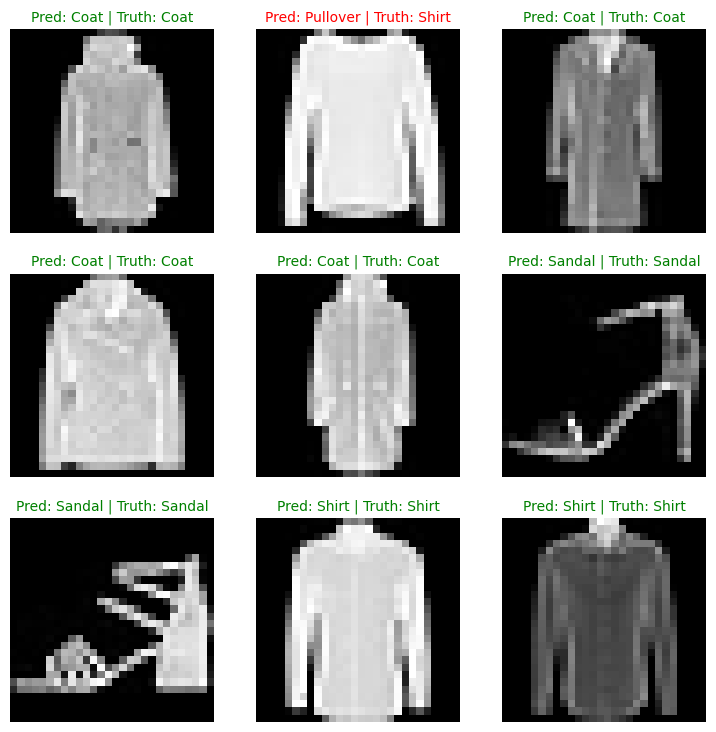
# 1. Make predictions with trained model
y_preds = []
model_2.eval()
with torch.inference_mode():
for X, y in test_dataloader:
# Send data and targets to target device
X, y = X.to(device), y.to(device)
# Do the forward pass
y_logit = model_2(X)
# Turn predictions from logits -> prediction probabilities -> predictions labels
y_pred = torch.softmax(y_logit, dim=1).argmax(dim=1) # note: perform softmax on the "logits" dimension, not "batch" dimension (in this case we have a batch size of 32, so can perform on dim=1)
# Put predictions on CPU for evaluation
y_preds.append(y_pred.cpu())
# Concatenate list of predictions into a tensor
y_pred_tensor = torch.cat(y_preds)
from torchmetrics import ConfusionMatrix
from mlxtend.plotting import plot_confusion_matrix
# 2. Setup confusion matrix instance and compare predictions to targets
confmat = ConfusionMatrix(num_classes=len(class_names), task='multiclass')
confmat_tensor = confmat(preds=y_pred_tensor,
target=test_data.targets)
# 3. Plot the confusion matrix
fig, ax = plot_confusion_matrix(
conf_mat=confmat_tensor.numpy(), # matplotlib likes working with NumPy
class_names=class_names, # turn the row and column labels into class names
figsize=(10, 7)
);
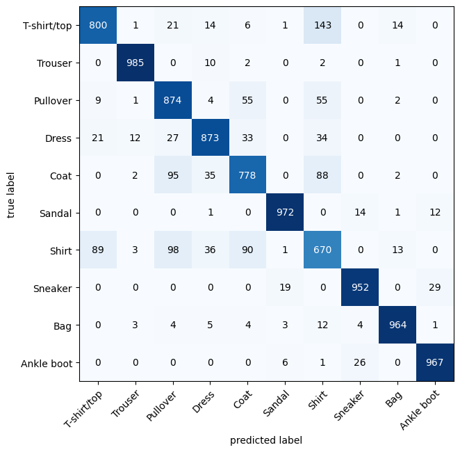
We can see our model does fairly well since most of the dark squares are down the diagonal from top left to bottom right (and ideal model will have only values in these squares and 0 everywhere else).
This kind of information is often more helpful than a single accuracy metric because it tells use where a model is getting things wrong.
It also hints at why the model may be getting certain things wrong.
Excersise#
Play around on the CNN Explainer website.
Look into the ResNet-18 and ResNet-34, can you build it?
Try to build a similar CNN on the MNIST dataset (or any dataset of your choice).